| [明治150周年記念] 名著から問題を読み解く! 明治から日本の未来を考える (3) 明治人物誌[3] (impress QuickBooks) | |
| 平田 周三 | |
| 株式会社インプレス (2018) | |
目次
武田鏡村 著
宮本又郎 著
島田昌和 著
長尾剛 著
吉川利一 著
「三菱」の創業者
岩崎弥太郎
不屈の生き方
武田鏡村 著
PHP研究所
2009年12月
ISBN：9784569773681
目次紹介
第１部 長崎の弥太郎と龍馬
第１章 長崎に眩惑する弥太郎
第２章 吉田東洋暗殺犯人の追跡
第３章 龍馬と海舟と隆盛
第２部 弥太郎と海援隊
第１章 龍馬と長崎の亀山社中
第２章 後藤象二郎の登場
第３章 弥太郎と海援隊
第４章 弥太郎の談判と龍馬の死
第３部 弥太郎、三菱を創業する
第１章 明治の新風に躍動する
第２章 台湾征討から西南戦争
第３章 多角経営と14年の政変
第４章 巨星、墜つ
原著者紹介
武田鏡村 (たけだ・きょうそん)
武田鏡村氏は、日本歴史宗教研究所所長、作家。1947年新潟県生まれ。1969年新潟大学卒業。長年にわたり、在野の歴史家として、通説にとらわれない実証的な史実研究を続ける。浄土真宗の僧籍も持つ。著書には『決定版 親鸞』(東洋経済新報社)、『[図解]坂本龍馬の行動学』(PHP研究所)、『幕末維新の謎がすべてわかる本』(ロングセラーズ)、『藩主なるほど人物事典』(PHP研究所)などがある。
要旨
1835年(天保5年)郷士 よりも下の地下 浪人の家に生まれた岩崎弥太郎は、極貧生活を送ったが、19歳のとき、江戸に遊学する機会を得て、江戸の碩学安積 艮斎 の見山塾に入った。事情あって帰国して、吉田東洋の少林塾に入門が許された。
転機は東洋の指示により、1859年(安政6年)、諸外国の事情調査のため長崎に行くことで訪れた。長崎ではさしたる成果はなかったが、外国商館に人脈ができた。藩から預かった資金がなくなり、4カ月で、許可なしに土佐に戻った弥太郎は、藩から放逐され、故郷で開墾や農作業に汗を流す日々を過ごす。
しかし、弥太郎の才能を買っていた後藤象二郎の配慮で再びチャンスが訪れた。1867年(慶応3年)、長崎に赴き、藩が経営する土佐商会の仕事に携わるよう命じられた。土佐商会は、藩のための資金調達と船舶や武器の購入、土佐の産物の輸出などの仕事をしていたが、多額の借金のため苦しい経営が弥太郎の肩にのしかかった。1868年(明治元年)、大阪港が開港となった。土佐商会は廃止され、翌年、大阪商会に異動となった弥太郎は、ここで大いに腕を振るう。
藩の事業を民営化するという新政府の命令により、1870年(明治3年)、大阪商会は九十九 商会(後に三川 商会)に名を変えて運営された。しかし、経営はうまくいかず、弥太郎が本格的に経営に携わることになり、社名を三菱商会に改称した。藩船2隻の払い下げを受け、海運事業に乗り出した。1874年(明治7年)の台湾出兵、続く1877年(明治10年)、西郷が起こした西南戦争で、大久保、大隈ら政府首脳から頼まれて、政府軍の兵士と軍需品の輸送を一手に引き受けた。三菱商会の事業は拡大し、わが国の海運業の基礎をつくった。
弥太郎の強さは、その大胆さと決断力の早さにあり、仕事は厳しかったが、人に優しく信頼を高めた。政府から支援を受けて発展したが、弥太郎は政府の支配を受けることを嫌った。成功のカギは、その経営方法にあった。社員には、官僚のような威厳を誇る武士商法を禁じ、徹底してお客第一主義を貫かせた。
伊藤博文、井上馨ら薩長閥の政府首脳は、三井ら財界に共同運輸会社をつくらせ、大隈重信・福沢諭吉・三菱の勢力に対抗を図った。共同運輸との壮烈な闘いの結果、政府の要望を受け入れて合併し、今日の日本郵船会社が誕生した。
1885年(明治18年)、胃病のため他界した。まだ50歳だった。九十九商会として独立してわずか15年で、財閥となる三菱の礎を築いた。
コメント
幕末・維新の混乱期を見事に乗り切って、事業を大成功させた岩崎弥太郎だが、壮年になるまで、華々しい舞台に立つことはなかった。若い頃の生活、藩の仕事についても苦労の連続だったが、挫折しても次のチャンスで盛り返し、失敗を後悔したり、嘆いたりすることはまったくなかった。
三菱財閥の基礎を築いた岩崎弥太郎というと、強欲な政商をイメージしがちだが、自己の利益よりも国や藩のこと、社員のことを考える人だった。頼まれて戦争の輸送を引き受けて事業は拡大した。自らが仕掛けたものではない。しかし、15年で三菱の礎を築いた経営手腕は、並々ならぬものがあったのだと思われる。
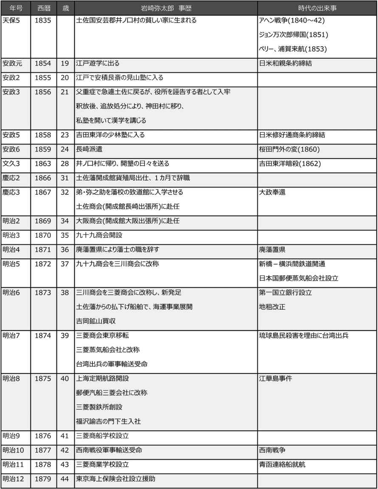
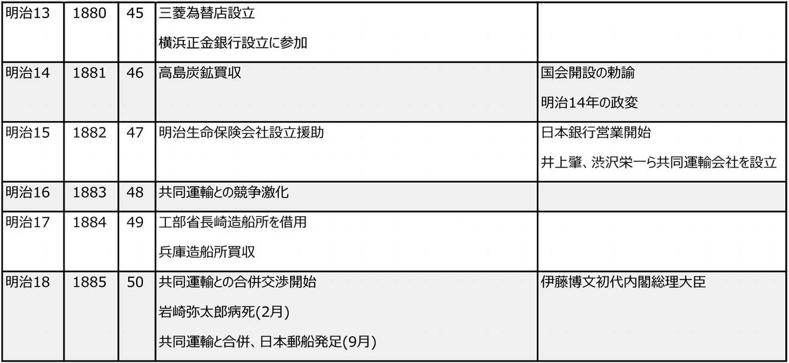
縮約
１．土佐藩の中の岩崎弥太郎
生い立ち
弥太郎が生まれた岩崎家は、地下 浪人といって郷士 より一段低い身分だった。山内一豊が静岡の掛川から土佐に移り、藩主となったとき、連れてきた家臣が上士となり、亡ぼされた長宗我部氏の遺臣は冷遇された。岩崎家もその遺臣だった。
弥太郎は、19歳のとき、遊学のため江戸に行く機会を得た。江戸では、当時、最高の碩学といわれた安積 艮斎 の見山塾で学んだ。幼いころから学才に優れていた弥太郎は、塾でも才能を発揮した。しかし、父が村の酒席で庄屋と喧嘩し奉行所から不当な処罰を受けたという知らせを受け、親思いの弥太郎はわずか10カ月で土佐に戻らなければならなくなった。奉行所にしつこく不当を訴えたため投獄されてしまった。7カ月で釈放され、追放処分となった弥太郎は、神田 村に移って私塾を開いて漢学を教えた。
そのすぐ近くに、謹慎を命じられていた吉田東洋がいた。弥太郎は東洋の少林塾に入門を許された。東洋は、1854年(安政元年)藩主山内容堂に従って江戸にいたとき、宴席での出来事から蟄居を命じられたのである。人材育成が重要と考えていた東洋は、少林塾を開き、少数の精鋭に学問を教えていた。その中には、東洋の甥の後藤象二郎や、乾 (板垣)退助らがいた。土佐藩の雄志たちで、東洋の影響を受けなかった者はいないであろう。
東洋は、外国列強のアジア進出に注意をはらい、アヘン戦争でイギリスが中国の清国を侵略していることに危機感をいだき、土佐を中心とした日本の取るべき方針を模索していた。東洋が藩主容堂に提出した開国についての建白書には、海軍の創設、航海運輸の振興、通商貿易の開始、海外島嶼への進出など海外事業のすべてを列記している。これは後年の弥太郎の事業的な使命と重なるものであった。
その東洋は土佐勤王党に襲われ、1862年(文久2年)に命を落としている。
東洋は閉門が解かれ、藩の仕置役という重職に復帰した。果敢に藩政の改革の乗り出し、才能があれば下士でも上士に昇格できるという階級制度の改革も行っていた。
弥太郎は、東洋の推挙もあって、郡 奉行所配下の郷廻 という職に就くことができた。初めての藩の仕事だった。その東洋から、1859年(安政6年)、上士の下許(しももと)武兵衛と長崎行きを命じられた。使命は、長崎で諸外国の事情を調査することだった。
長崎に行く
1859年(安政6年)12月、弥太郎は、はじめて長崎の地を踏んだ。長崎は、長年にわたる鎖国状態にあっても、オランダや中国(清国)には門戸を開いて、とくにヨーロッパから入ってくる医療技術や文物が日本の先駆者たちの注目を集めていた。弥太郎が長崎に赴いた年、長崎は開港し、諸藩は競うように長崎に視察団を送り込んで、先進技術の導入と貿易の可否を探らせていた。土佐藩が弥太郎と下許を派遣したのも、アジア各国に進出を図る欧米列強と清国の動静を探ることと、土佐藩として貿易の可能性を調べるためであった。
弥太郎は、使命に従い海外情報を集めようと、シーボルトやイギリス人貿易商メイヤー、清国人の通訳や貿易商人などと会って話を聞くが、一向に要領を得ないでいた。藩から支給された公金はどんどん減っていく。
丸山の花街で偶然に出会ったイギリス人の貿易商メージャーと親しくなり、メージャー商会を訪問し、イギリス軍艦の見物もさせてもらった。軍艦の構造や設備には興味を持たなかった弥太郎だったが、樟脳 の話に耳をとめた。長期間の航海では、食糧などが腐敗してしまうので、その防止のために樟脳を使っていることを聞いた。樟脳はクスノキから作られる。そのクスノキは土佐の各地に多く自生している。メージャーは、樟脳が防腐剤としてだけではなく、心臓の強心薬としても需要が高いと話してくれた。藩で樟脳を大量に生産して輸出できると弥太郎は思った。そのころの弥太郎は、第一に藩の利益を考えた。それは、先に日本を考える坂本龍馬との違いであった。
持参した公金を使い果たして、動きの取れなくなった弥太郎は、吉田東洋に宛てて解任を嘆願する手紙を送った。しかし、何も返事がなく、指示を得ないまま土佐に戻った。当時、藩の上層部では、井伊大老の暗殺事件で騒動になっていたのである。帰国して、弥太郎は罷免され、再び農作業に従事した。誠実な弥太郎は、長崎で私用に使った費用は、金を借りて清算している。
開成館への就職
この頃、東洋が勤王党に暗殺される事件が起き、東洋に連なる人脈は排除されている実情を見て、高知から実家のある井ノ口村に帰った。以来、3年間、安芸川沿の両岸を開墾する日々を送った。安芸川沿いの荒れ地に堤を築いて、新田1町歩、綿作地5反歩を開き、地元ではこれを「岩崎開き」と呼んでその功績をたたえている。
1866年(慶応2年)の春に土佐藩直轄の開成館の貨殖局の下役として働くことになった。しかし、旧態依然とした役人仕事に愛想をつかし、わずか1カ月あまりで辞めてしまった。その後1年間、幕末の激動期にもかかわらず、井ノ口村で晴耕雨読の生活を送っている。
弥太郎は1867(慶応3年)3月、17歳になった弟の弥之助を藩校の致道館に入学させるため久しぶりに高知に出てきた。弥之助は、弥太郎を補佐し、亡き後を継いで三菱を発展させた男である。入学手続きを終えた後、弥太郎は恩師の吉田東洋の同門で、英才の誉れ高い福岡藤次(孝弟)を訪ねた。福岡は土佐藩の家老の一族で、この年に仕置役という重職に就いていた。福岡から、長崎に行くので一緒に行ってくれるよう頼まれた。何時出発かと尋ねたら、明日だという。長崎にいた参政の後藤象二郎が開成館長崎出張所(通称：土佐商会)の要員にと弥太郎を指名していたらしい。
長崎で働く
弥太郎が長崎に来たのは7年ぶりだった。福岡は、後藤とともに坂本龍馬と中岡慎太郎と打ち合わせ、海援隊と陸援隊の結成について話した。弥太郎はこれには関わっておらず、もっぱら長崎奉行所や外国商館との交渉に当たった。
後藤象二郎は、長崎にいた間、莫大な金を使って軍艦や船舶、洋式銃器、弾薬などを買いまくった。その額は1年の滞在中だけで95,000両にものぼり、藩の財政は窮乏していた。後藤の後を引き継いだ弥太郎は、膨大な負債を抱えながら、藩の要求を満たさなければならなかった。海援隊からも、金をせびられていた。
海援隊は天下国家を論じ、血気にはやっていたが、弥太郎は土佐商会の財政立て直しに必死だった。長崎に派遣されていた大目付の佐々木三四郎(高行)は、政局を重視し、武器類の購入を土佐商会に求めた。これに対して、弥太郎は土佐商会を財政難から救うため交易を盛んにして利益をあげるべきだと主張して対立した。後は任せると弥太郎が辞表を出し、商会員一同が弥太郎の帰国に反対したため、京都にいる後藤に相談したいという弥太郎の要求を佐々木はのんだ。
すぐ京都に行った弥太郎は、後藤に土佐商会の事業内容やイギリス人水平の殺害事件の経緯、伊呂波丸の賠償問題などを報告して、事後の指示を待った。しかし、後藤は、徳川慶喜が決断した大政奉還のこともあって余裕がなく、弥太郎は、大阪にある開誠館貨殖局大阪出張所(大阪商会)で待機することになった。この間、大阪なりの商売のことを学んでいる。
しばらく経ってから、後藤は、佐々木三四郎を藩に帰還させ、土佐商会は弥太郎に任せることになったと告げた。弥太郎はこれを大いに喜んだが、鳥羽・伏見の戦いが始まり、廻船をめぐって再び佐々木と衝突し、弥太郎は辞表を出した。家老になっていた後藤は、弥太郎を御馬廻に昇格させて、土佐商会の御用加役へと破格の昇進をさせることで、辞意を撤回させた。
やがて土佐商会は、大阪商会に吸収されることになり、弥太郎はその残務整理のために1年ほど長崎に一人残った。
２．明治維新と岩崎弥太郎
大阪商会への転勤
維新から廃藩置県が行われる1871年(明治4年)までの期間は、まだ藩の政府が実権を持っていた。岩崎弥太郎は、長崎の土佐商会の残務整理を終えた1869年(明治2年)、土佐藩の大阪商会(開成館貨殖局大阪出張所)に転勤を命じられた。
その前年7月、大阪は開港していた。開港時、関税事務は五代 友厚 と元海援隊の陸奥 宗光 が担当していた。翌年、貿易と船舶の管理を行う大阪通商司が設置され、井上聞多 (馨)らが関わり、大阪府知事に後藤象二郎が赴任してきた。
大阪港は、アメリカ領事ハリスが、利用価値の薄い下田に代えて開港を要求したもので、新政府にとっても重要な所であり、実務に長じる人材が投入された。その中で、弥太郎は土佐藩から派遣された実務家として、その存在はしだいに注目されるようになった。
土佐商会で、弥太郎は、船舶などを求める諸藩に外国商館との取引を斡旋し、その代理業務を行っていた。龍馬がその資金を薩摩藩や土佐藩に頼っていたのに対し、弥太郎は外国商館から資金を調達していたので、スケールには大きな差があった。大阪商会でも、弥太郎は主に外国商館と取引した。大阪商会の利益は土佐藩に入る。
土佐藩の財政は危機的状況にあった。藩札を乱発して土佐の物品を強制的に買い上げ、これを外国貿易で貨幣に換える政策は、土佐藩内で物価の急騰を招き、藩の経済機能を著しく低下させていた。土佐藩の負債は百万両以上(このうち外債は約35万両)にも上っていた。話は先のことになるが、この借財は、そのすべてではないが、廃藩置県で政府が肩代わりする。廃藩置県が予想外に順調に行われたのは、全国の各藩には土佐藩と同じような事情があったからである。
明治初年、弥太郎は藩の財政の担い手として、藩内での地位を高めていた。後藤象二郎、板垣退助らとも親しくしている。山内容堂からも弥太郎は気に入られていた。容堂は、明治新政府では議定や内国事務総督などを務めたが、しだいに政府の主軸からはずされ、廃藩置県以後はもはや土佐藩に君臨することもできず、酒に溺れる日々になっていた。
大阪商会の民営化要求
政府の藩経営を民間に移せという命令により、1870年(明治3年)9月、土佐藩は大阪商会を藩から分離して、表向きは私的な商会として経営することにした。社名は九十九 商会に決まった。土佐湾の別称「九十九洋 」に因んだものである。弥太郎は、少参事という中老に相当する地位に昇進して、大阪藩邸の責任者になっていたため、九十九商会には関係することができなかった。しかし、弥太郎なしでは経営はできない。代表者を別に立てて、交易に関わった。
九十九商会は、土佐藩からの借用船で、大阪と東京、神戸と高知の間の海輸を主としていた。このほかに外国商館や他藩との取引も行った。それまで大阪商会で使っていた船の旗は藩主の家紋である三つ葉柏だったが、柏の葉を菱形に変えた。
廃藩で、弥太郎は藩の地位を失い、九十九商会の仕事だけになった。まだ今後身の振り方を決めていなかった弥太郎は、九十九商会を経営幹部3人に任せることにした。幹部の名前から一字をとり、「三川 商会」とした。しかし、営業がうまくいかず、弥太郎が乗り出すほかなかった。
３．三菱の創業と発展
三菱商会として新発足
1873年(明治6年)3月、三川商会を三菱商会に改称し、東京本社を日本橋南茅場町に置いた。弥太郎は、三菱商会社長(当時は「旦那」と呼んだ)になり、独裁体制を敷いた。弥太郎が真っ先にしたことは、「士族の商法」から脱皮して、商人に徹することだった。社員には、袴を脱がせて、前垂れを掛けさせた。法被 を着て得意先を回らせた。当時、武士の特権を失った多くの士族は、さまざまな商売に手を出したが、どうしても武士としての態度が出て横柄だったため、その多くが失敗している。完全に武士の意識から脱皮しなければ、商売はできないと弥太郎は考え、徹底した。
日本国郵便蒸気船会社との戦い
三菱商会は、土佐藩からの払い下げ船舶で海運事業を展開するが、そこに現れた強敵がいた。三井である。政府は、海運事業が産業の発展に欠かせないと考え、アメリカの海運事業進出を排除しようとしていた。1872年(明治5年)、三井を中心に財界に、「日本国郵便蒸気船会社」を設立させた。三井は、伊勢松阪から発祥して、江戸時代には呉服と為替を扱う越後屋として莫大な財をなしていた。大蔵官僚として財界の要人になっていた井上馨は、三井ととくべつに親しい関係にあった。三井は政府から16隻の払い下げを受けてスタートした。
日本国郵便蒸気船会社は、資本力を生かし、運賃の大幅な値下げ作戦に出て、中小の回漕業者は倒産の憂き目にあっていた。しかし、半官半民の性格が禍した。役人的な横柄で紋切り型の態度やサービスが利用者の不評をかって、しだいに客足が遠のいていた。これに対して三菱商会は、完全な民間事業者に徹し、乗客を第一と考える姿勢を貫いてサービスを重視したため好評だった。日本国郵便蒸気船会社は経営難に陥っていく。
台湾征討と西南戦争
台湾に漂着した沖縄人54人が、現地人によって虐殺されるという事件が起きていた。これに抗議して清国政府と交渉していた政府は、1874年(明治7年)、台湾への出兵を決めた。台湾出兵にあたり、イギリスやアメリカは輸送船の提供を拒否してきた。そのため、大久保と大隈は急遽、外国船を購入して輸送にあてるとともに、日本国郵便蒸気船会社に動員を命じた。ところが、国内で三菱と熾烈な輸送競争をしており、顧客を三菱に奪われることを恐れ、消極的な姿勢を見せた。これに大久保や大隈が激怒した。
大隈は、長崎時代に懇意になっていた弥太郎に声をかけた。弥太郎は二つ返事でこれを引き受けた。三菱蒸気船会社は兵員などの軍需輸送に大きく貢献した。この台湾征討の功績から、後に政府所有の船舶13隻の委託を受けた。三菱商会は、日本の海運界にゆるぎない地位を確保したばかりか、外国汽船会社に対抗して外国航路に進出することになる。
政府は三菱に命じて横浜と上海航路を開設させ、アメリカの太平洋郵船会社と対抗させた。これは日本最初の外国航路となった。1875年(明治8年)のことである。
台湾出兵の翌年、政府は釜山に軍艦を送り、朝鮮を威圧している。江華島事件である。また政府は、アメリカやイギリスの汽船会社を日本海域から放逐する目的で、三菱に対して政府所有の汽船13隻を払い下げ、運賃助成金と海員助成金を交付していた。この江華島事件で三菱は12隻の汽船を徴用されている。
かくするうち1877年(明治10年)に、西南戦争が始まった。西郷隆盛が率いる鹿児島の士族反乱である。政府軍は、三菱との緊密な連絡のもと、戦略上の重要拠点に兵員を迅速に上陸させて、西郷軍を包囲する体勢をとることができた。弥太郎は、外国航路に就航する船を除いて、全船舶を政府軍の兵員や軍需品の輸送にあてた。新たに汽船を購入する費用を政府からも借り入れた。
西南戦争が終わったときの三菱の汽船所有は61隻を数えた。そのトン数は35,464トンで、全国の汽船総トン数の73パーセントを占めた。
事業の多角化
弥太郎は、数々の事業も展開したが、2、3を除いて大きな成果をあげていない。成功したものには、吉岡鉱山がある。鉱山事業については、後藤を苦境に落し入れていた高島炭鉱を買い取って欲しいと福沢諭吉が弥太郎に持ちかけたという話がある。弥太郎はリスクが大きいと断わった。それでも福沢は屈せず、大隈を動かすなど粘った結果、三菱商会に買わせた。高島炭鉱は優良な炭鉱で、福沢が言ったとおり、後に三菱にとって宝の山になった。
弥太郎は、1880年(明治13年)、三菱為替店を設立した。この三菱為替店は、さまざまな曲折を経た末に、弥太郎から数えて四代目となる小弥太の時代に三菱銀行になっている。
弥太郎と福沢が、大隈の援助のもとで実現したのが横浜正金銀行である。弥太郎は外国商社によって掌握されている貿易を日本に取り戻したいと考え、福沢は日本の商業立国を唱え、大隈は外国為替銀行の必要性を認識していた。
同じころ、東京海上保険会社ができ、弥太郎は筆頭株主になった。運輸にかかわる倉庫業にも事業を展開している。
弥太郎の没後、明治20年には、政府から長崎造船所の払い下げを受けて三菱造船となり、弥太郎の夢が実現した。
明治14年の政変
とんとん拍子に急成長した三菱商会に一つの危機が訪れた。大蔵卿だった大隈重信が、明治14年政変と呼ばれる事件のために政府を去ることになった。事件とは、憲法に関する意見書と北海道の開拓使の官有物払い下げに関するものだった。伊藤博文は大隈を敵視しており、藩閥政府の中で、佐賀藩出身の大隈は孤立無援だった。
大隈の側には、岩崎弥太郎と福沢諭吉がいた。大隈を追い落とそうとする一派は、大隈の後ろには三菱と福沢がおり、藩閥政府の転覆が狙いだと、まことしやかな噂話を新聞に掲載した。大隈側は国民世論の批判にさらされることになったのである。これを機に、三菱が政府の過大な保護を受けていた反発が一気に噴き出した。弥太郎が計画していた北海道進出はこのため頓挫する。
弥太郎は、社中に、「政治不干渉」「事業第一」の経営方針の鉄則を打ち出し、一切政治に関与せぬよう三菱の社員に訓告した。相手を誹謗、中傷することも禁じた。
共同運輸会社
1882年(明治15年)7月、共同運輸会社が創立された。大隈の政治力を殺ぐため、海上権を握る弥太郎の三菱に対抗することが目的で、藩閥政府が計画したものである。設立人は三井財閥系の第一銀行の頭取を務める渋沢栄一らだった。渋沢は、後年、実権者は農商務大輔の品川弥二郎で、その裏面には井上馨が存在して、ありとあらゆる便宜を与えたと語っている。そのような背景を知る渋沢は、会社が発足すると役職につくことを辞退している。
共同運輸会社と三菱は、共に新設した北海道定期航路で、乗客と貨物の運賃で際限のない値下げ競争になった。運賃だけでなく、航行速度でも競い、衝突事故を起こすまでになった。弥太郎の競争意識に火がついた。経費の合理化を図りながら、値下げ競争に追従した。両社は大きな損失を被った。三菱と違って株式組織の共同運輸は、株価が低下し、配当もできない状態になった。弥太郎は、市場に出回りはじめた共同運輸株の買占めを指示して、1884年(明治17年)末には、共同運輸の株式の過半数を制するほどになった。
この頃から、弥太郎の健康は次第に衰えていった。会社の激務に耐えられず、弟の弥之助が代行するようになっていた。
政府からの共同運輸への貸付にストップをかけたのは、太政官の書記官長の土方久方だった。土佐出身で、坂本龍馬よりも早く薩摩と長州の同盟を策していた人物である。共倒れになれば、欧米の会社の進出を防ぐことはできない。すぐに両社を合併させるべきだと論じた。
両社の協議は1885年(明治18年)1月に始まり、3月にまとまった。弥太郎は2月に亡くなった。9月、三菱と共同運輸は合併して「日本郵船会社」として発足した。ここに3年に及ぶ熾烈な闘いは終わり、アジアとヨーロッパへの航路が開かれる。日本郵船の筆頭株主は岩崎家で、半数の株式をにぎり、それが三菱財閥を支える収入源になった。
日本郵船の発足とともに、三菱は海運事業から手を引くが、社長となった弥之助は、鉱山・造船・製鉄のほか、銀行・地所・建設・倉庫・商事貿易へと進出し、三菱企業群を形成した。
商都大阪をつくった男
五代友厚
宮本又郎 著
NHK出版
2015年12月
ISBN：9784140816905
目次紹介
第１章 薩摩藩士、五代友厚
第２章 産業のプロデューサーとしての五代友厚
第３章 五代友厚と近代大阪
第４章 広岡浅子と五代友厚
附章 大阪経済の歴史的眺望 －伝統と革新の系譜
原著者紹介
宮本又郎 (みやもと・またお)
宮本又郎氏は、日本経済史、経営史を専門とする学者。大阪大学名誉教授。経済学博士。1943年福岡県生まれ。神戸大学大学院経済学研究科修士課程修了。大阪大学経済学部教授、同大学経済学部長、関西学院大学大学院経営戦略研究科教授を歴任。経営史学会会長、放送大学客員教授も務めた。著書には、『日本企業経営史研究―人と制度と戦略と』(有斐閣)、『シリーズ日本の近代－企業家たちの挑戦』(中公文庫)、『企業家たちの幕末維新』(メディアファクトリー新書)などがある。
要旨
五代 友厚 は、薩摩藩の上級武士の家に生まれ、若くして藩の役職に就き、長崎に赴任、幕府の海軍伝習所に長年所属していたことが、彼の人生を方向づけた。薩摩藩が計画したロンドンへの留学生派遣に引率者として同行し、イギリスおよびヨーロッパで近代産業に接し、日本の進むべき方向を確信した。
明治新政府に採用され、大阪港開港に伴うさまざまな業務の総指揮に当たることになった。ヨーロッパで得た知識を活かして、幕末に衰退した大阪を復興させる取り組みを矢継ぎ早に実施し、活を入れた。その矢先、横浜勤務を命じられ、問題となっていた貨幣制度の改革の実務を担当する。しかし、大阪での夢の実現と実業へのあこがれから官を辞して、1869年(明治2年)大阪に戻った。それから15年ほどの短期間に、地元の豪商らを結束させ、新しい商業都市大阪の基盤を築いた。自らは、鉱山経営に乗り出し、実績をあげた。とくに、各地に分散する鉱山を統合的に管理する会社弘成館の経営には、最新の洋式管理方式を採用するなど、のちのわが国の鉱山経営の手本となるものであった。
五代は、薩摩藩出身という立場から、多くの明治初期の政治家との人脈も豊富であり、それが五代の強みでもあった。明治6年政変(征韓論をめぐる西郷らの政府からの退陣)の後、孤立する大久保利通を助けるため、木戸孝允 、板垣退助の協力を実現する大阪会議を五代の私邸で開いた。
渋沢栄一と対照的に、五代は国益を重視した。政治家らとの広い人脈を使えば岩崎弥太郎以上の政商になれたかもしれない。逆に、私利をめざして事業を展開していれば五代財閥をつくる可能性もあった。しかし、五代はそのどちらも選ばなかった。実業の世界に身を置いて、事業家として国の産業の発展に力を尽くした。
志半ば、49歳という若さでこの世を去ったのは残念である。明治の文化・産業の花がようやく開こうとする前だった。
コメント
栄誉も権力も利益も求めず、人のため、地域・国のため、努力を惜しまなかった五代友厚の生きざまには、他の明治人にはない爽やかさを感じる。西洋技術の知識、アイデアがあり、外国人有力者とも親しい関係を築き、何よりも人を結束させる能力は並外れてすぐれていた。五代がもうあと10年長生きしていたら、どんなことをしただろうかと考える。
最近になって、五代友厚の名前が全国的に広く知られるようになったのは、NHKの朝ドラ「あさが来た」がきっかけである。本書にも、広岡浅子のことに1章を設けて紹介している。しかし、ドラマと違い、原著者も指摘しているように、五代と浅子とのつながりや関係を明らかにする資料は見当たらない。だが、浅子が嫁いだ加島屋の当主広岡久右衛門は五代の事業に多額の寄付や出資をしており、浅子の夫の広岡信五郎が大阪商法会議所の会頭になっていることから、五代と浅子が出会っていないはずがない。
いずれにしても、近代大阪にとって、五代友厚の存在はあまりに大きい。もし五代がいなかったら、神戸に従う立場になっていたかもしれない。
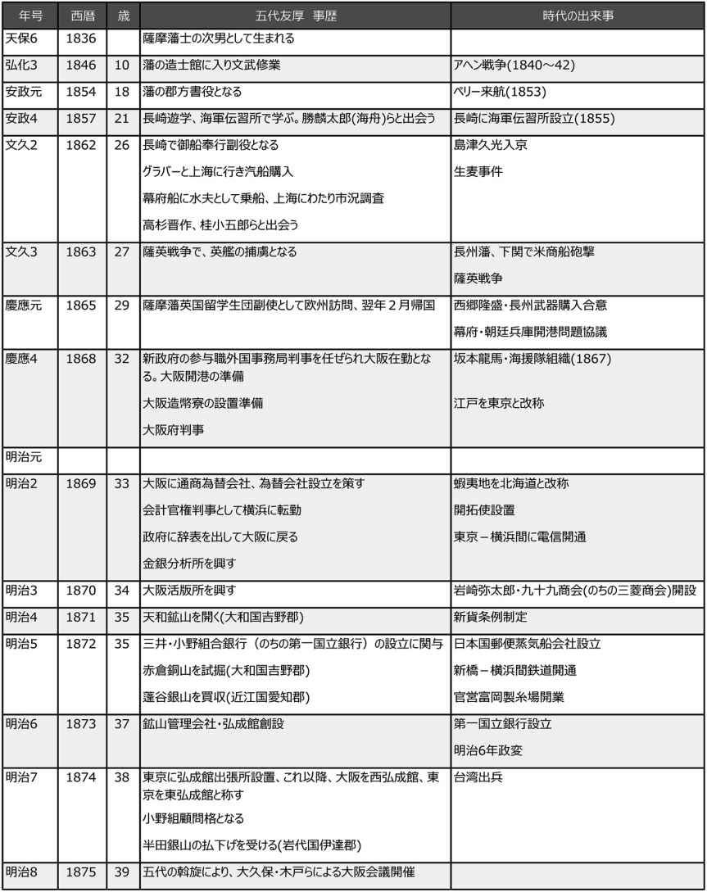
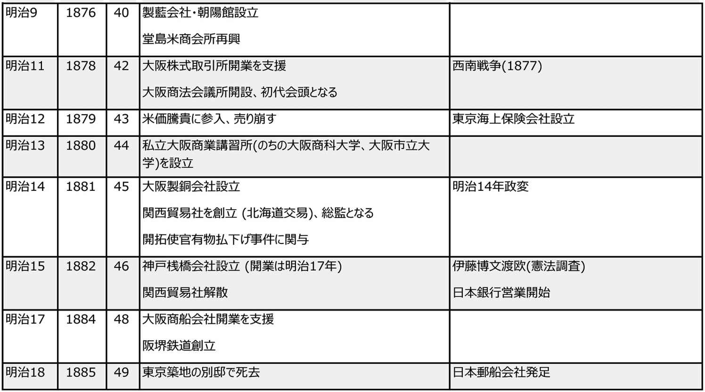
縮約
１．薩摩藩士 五代友厚
生い立ち
五代 友厚 は、1836年(天保6年)、薩摩藩の儒者五代直左衛門秀尭 の次男として生まれた。父秀尭は漢学の造詣深く、町奉行を兼ね、藩主島津斉彬 のブレーンの一人であったといわれる。五代家は家禄300～500石であった。薩摩藩総家中1200家の中で、400石取り以上は10パーセント程度だったから、上流の家柄といえよう。
友厚の幼名は徳助だったが、藩主が友厚の才をたたえて才助と名付けたという。徳夫という兄がいたが、父親ゆずりの剛直な漢学者で、ビジネスに身を投じた友厚とは生涯肌が合わなかったと伝えられている。
友厚が13歳のとき、父秀尭は藩主から世界地図の模写を命じられた。父に代わって模写図2枚を作り、1枚を自分の書斎の壁に張って眺めていたが、これを使って直径60センチほどの地球儀を製作したという。海外への興味は、少年時代から強かった証拠になろう。
長崎海軍伝習所
1854年(安政元年)、五代友厚は郡方 書役 に任じられた。1857年(安政4年)、幕府は長崎に海軍伝習所を設置した。オランダの海軍士官を指導者に招き、幕府伝習生と諸藩派遣生に、航海・砲術・測量・数学などを学ばせた。開明派の薩摩藩主島津斉彬は、十数名の藩士をこの伝習所に送った。五代もその一人に選ばれた。
長崎海軍伝習所には、勝麟太郎(海舟)、榎本釜次郎(武揚 )、松木弘安 (寺島宗則)など、のちの明治期に政治家、高級技術者、新知識人として活躍する俊秀が集まった。五代の海外に関する知識は豊かになり、開国思想を身につけた。
五代は、途中、帰国や海外旅行の期間もあったが、1857年から、通算11年を伝習所で過ごした。この間に、スコットランド出身の商人トーマス・グラバーら多くの知己を得た。彼らは明治になってからの五代の活躍に力を貸すことになる。
薩英戦争
1862年(文久2年)1月、薩摩藩御船奉行副役 となった五代は、グラバーとともに上海に行き、薩摩藩のために約4万両の汽船を1隻買い入れた。同年4月、幕府船千歳 丸が商船として上海に派遣されると聞いて、これに便乗した。薩摩藩士は乗船を許されなかったため、水夫としてもぐりこんだ。船には、長州の高杉晋作、佐賀の中牟田倉之助などが藩命を受けて乗っていた。千歳丸の目的は、上海において貿易をすることと、市場調査を行うことだった。高杉晋作は、この旅行記『遊清五録』の中で、五代について、「薩摩藩の蒸気船の副将格の人物で、蒸気船の修復や上海との交易をめざしている」と書き残している。
1862年(文久2年)、島津久光が江戸からの帰途、神奈川付近の生麦村を通行していたとき、英国人4名が久光の行列を横切り、薩摩藩士が殺傷するという事件が起きた。これが生麦事件である。英国代理公使ニールは、幕府に賠償金支払いを、薩摩藩には犯人の引き渡しと遺族補償金を要求した。幕府は賠償金支払いを認めたが、薩摩藩は応じなかった。
ニールは軍艦7隻を率いて、鹿児島に直談判に向かった。そのとき長崎にいた五代は、英艦隊は必ず長崎に寄港するとみた。ニールに直談判し、平和裡にことを解決しようと待ちかまえていたが、英艦隊は予想に反して鹿児島に直行した。五代は急ぎ帰国したが、藩論はすでに開戦と決していた。やむなく五代は松木弘安らとともに3隻の軍艦を率いて鹿児島湾に待機したが、英艦の急襲にあい、拿捕 された。
これをきっかけに、薩摩藩と英艦隊の砲戦が始まり、薩摩は砲台を破壊され、3隻の軍艦が撃沈され、鹿児島の町は炎上するなどの被害を受けた。英艦隊のほうも旗艦が損傷を受け、死傷者も出て、上陸をあきらめ、横浜に帰った。英国軍が上陸作戦を敢行しなかった裏には、五代らの巧みな説得があったからであろう。
五代と松木は横浜に連行されたが、英国提督クーパーの計らいで釈放された。しかし、幕府だけでなく、薩摩においても五代らへの非難は厳しく、身の危険を避けるため武州熊谷で亡命生活を送ることになる。
のち五代は誤解が解けて、藩に戻ることが許されたが、捕虜になったことを武士の恥とする薩摩の空気があった。
薩摩藩留学生派遣
1865年(慶応元年)、薩摩藩は、グラバーの世話で、ロンドンに留学生14名を送った。団長の新納 刑部 、引率者3名、通詞1人を含めると総勢19名となり、五代は、松木とともに引率者としてこれに加わった。留学生は藩の洋学所・開成所から選ばれた俊秀で、ほとんどは10代後半から20代前半の者だった。この中には、明治時代に活躍した森有礼 (文部大臣)、吉田清成(外務・農商務大輔)、鮫島尚信(外務大輔)、町田久成(帝国博物館初代館長)、畠山義成(東京開成学校初代校長)、村橋久成(開拓使麦酒醸造所創設)、長沢鼎 (カリフォルニア州ぶどう王)などがおり、歴史上最も成功した留学生派遣となった。幕府は鎖国をしており、これは密航である。全員脱藩させ、変名を用いた。
留学生をロンドン大学に預けたのち、五代はイギリス各地を視察した。松木は、イギリスとの親善を深めるため外交当局との折衝にあたった。
五代は、武器を中心に多くの買い入れを行った。この中に紡績機械が含まれていたのが注目される。この紡績機械は1867年(慶応3年)、鹿児島紡績所に設置され、わが国最初の洋式紡績機械となった。イギリス人技師6名が招かれ、200人の職工が作業に従事した。1870年(明治3年)には、分工場として大阪に堺紡績所を設立、2年後に政府がこれを買い上げている。明治10年代後半以降、阪神地方に次々と紡績工場がつくられたが、鹿児島・堺紡績所の技術と経験が受け継がれたものである。
五代はヨーロッパにまで足をのばし、ベルギーではフランス国籍のコント・ド・モンブランと貿易商社の設立に関する契約を締結した。薩摩藩とモンブランおよびベルギー・フランスの出資者が合弁会社を設立し、貿易のほか、鉱山開発、工場・鉄道・電信などを建設する商社をつくろうという構想だった。その後、薩摩はイギリスとの関係が深まり、この計画は実現しなかった。
長崎に赴任
1866年(慶応2年)に帰国した五代は、御納戸奉行格で御用人席外国掛を命ぜられ、長崎において外国領事、外国商人との折衝に奔走した。長州その他の倒幕諸藩に、グラバーから買い入れた武器を供給している。桂小五郎(木戸孝允 )、高杉晋作らと、薩長合弁の商社設立の計画も立てた。この計画は実現を見なかったが、五代は薩摩の汽船開聞 丸を駆使して、米、弾薬、武器などを各藩に売り歩いている。この間、長州のほか、坂本龍馬ら多くの志士と交わり、「薩の五代」の名は広く知られ、五代の開明的知識は高く評価されるようになっていた。
五代が長崎で行った事業の1つに小管修船場がある。これは薩摩藩家老の小松帯刀 、五代友厚、グラバーのほか、鴻池屋、辰巳屋、千草屋など大阪町人からも出資を受けて、1868年(明治元年)につくられたもので、薩摩藩および諸藩、外国船の修理を目的とするものだった。日本の近代造船史上、最初の本格的な修船場で、当時としては空前の大工場だった。主に1000トン以下の船を修理したが、アメリカの大型船の修理にあたったこともある。小管ドックのすばらしさに着目した政府は、1869年(明治2年)にこれを買い取り、のちの1887年(明治20年)に三菱に払い下げられ、同社の長崎造船所の基礎となった。
新政府の仕事
1867年(慶応3年)12月に新政府が成立すると、五代はその新知識を認められて、参与職外国事務掛となった。外国人とのさまざまな衝突事件を解決する仕事で、五代は機敏に行動して、その外交的手腕は高く評価された。一歩誤れば列強との武力衝突に発展しかねない事件もあったが、五代が培ってきた外国人人脈が役立った。
1868年(慶応4年)2月、五代は参与職外国事務局判事となり、大阪在勤となった。これが大阪とかかわりを持つようになった端緒となった。課せられた仕事は、大阪川口運上所(税関)における一切の事務、つまり外国貿易関連事務を管轄することだった。
新政府は、江戸末期から要求の強かった大阪港の開港を、1868年(明治元年)早々に実施した。五代は、外国船の停泊の便を図るため、波止場を新設するなど、川口港の整備を行った。居留地の建設を急ぐとともに、大阪開港に備えた。
貨幣制度の混乱によって、円滑な外国貿易が妨げられ、外国関係者からの抗議を受けて、五代は政府にさまざまな建議を行った。その結果、政府は造幣寮を大阪に建設することを決した。五代はグラバーに依頼して、香港から英国造幣局の中古機械を購入した。造幣寮は明治初年における最大の洋式総合工場となった。燃料用のガスの製造も行い、余剰を民間にも供給した。化学研究所も設けた。経営面では、複式簿記を採用し、日進学舎という教育機関を設け、物理・化学・英語などを教えるなど、大阪における文明開化の窓口となった。
新政府は、専門商社および金融の便を供給する為替会社を全国主要都市に設立することにし、有力商人の参加を勧誘していた。大阪では、五代が中心となり、当時の有力為替商たちを誘った。大阪商人はこれに消極的だったが、五代は説得に奔走した結果、多くの者を結集させることができた。中でも広岡家(加島屋)とは関係を深めたように思われる。五代はこうして大阪財界の中枢人物と深く関わり、その存在が知られていた。
横浜への転勤
1868年(明治2年)5月、五代は突如、会計官権判事として横浜に転勤することになった。当時、維新当初の財政運営を担当してきた由利公正(三岡八郎)に対する政府内部の批判が高まっていた。財政のトップの座にいた大隈重信を支える新知識人を必要としていたのかもしれない。左遷だったという説もある。
しかし、五代は1カ月余で、辞任した。財政改革に関する五代の政府への建言をめぐって、薩摩で五代非難の声が上がったことが大きな原因だったとされる。中央政府で活躍している文勲派に対する武勳派のねたみもあった。
官を辞した五代は、大阪に戻る決心をした。
２．産業のプロデューサーとしての五代友厚
財界リーダーとしての五代
五代友厚はさまざまな事業に関係したが、そのそれぞれに専門的知識を持っていたわけではない。新事業のアイデアを示し、彼をめぐるタスク・フォースがそれを遂行するということが多かった。多くの優秀な人材が、五代のブレーンとなっていた。財界にも有力な協力者がいた。
明治期における有名実業家にはいくつかのタイプがあった。
動乱期を利して成り上がった企業家(大倉喜八郎、安田善次郎、浅野総一郎など)
政商タイプの企業家(岩崎弥太郎、川崎正蔵、藤田伝三郎など)
財界リーダー型企業家(渋沢栄一、五代友厚、田中源太郎、奥田正香 など)
財界リーダー型企業家とは、個人の利益よりも、社会や国のためになることに価値を置き、企業をまとめて新しい事業を創出した企業家である。このタイプの企業家に求められる資質の第一は「情報力」だった。的確な経済情報をキャッチする能力が必要である。第二には、新しい技術を受け入れる組織づくりの才幹だった。自己資金がないから、複数の出資者による共同企業という形をとらなければならない。これらの能力があっても、組織し、事業を起こすには、政府や財界に強い人脈を持っていなければならなかった。
これらをすべて兼ね備えているという人物は数少なかった。五代はそういう中の一人だった。
五代が手掛けた事業
五代が関わった主な事業をあげてみよう。
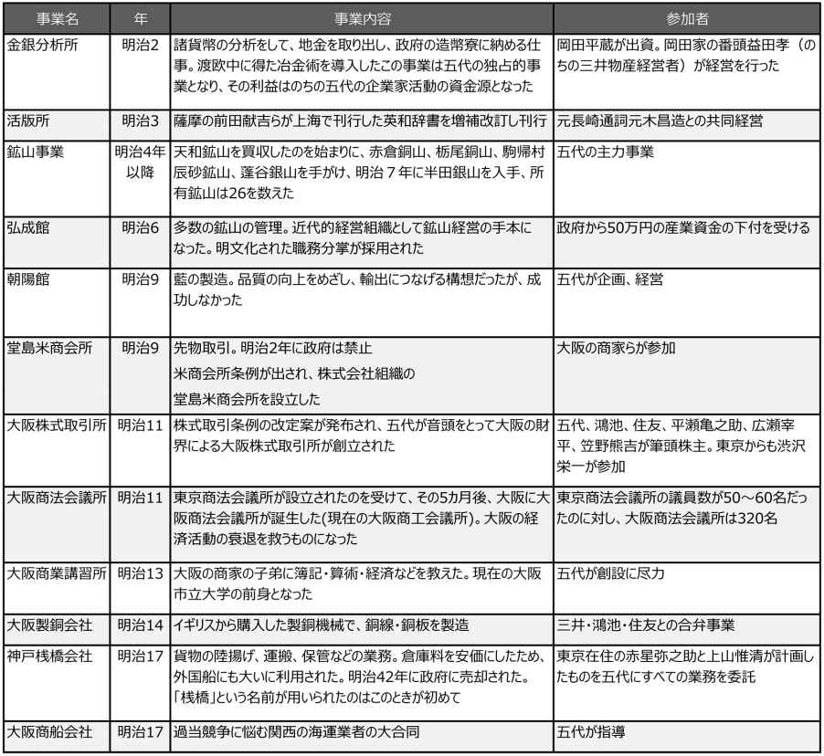
五代友厚と渋沢栄一
「東の渋沢、西の五代」と言われる。渋沢栄一も国家のことを考え、事業家らに出資させ、結束させることで新しい事業を実現した。渋沢は、第一国立銀行、日本鉄道、王子製紙、日本郵船、大阪紡績など、華々しい近代産業を成功させた。一方、五代が今日まで続く事業として残したものはほとんどない。
一つには渋沢が1932年(昭和6年)、90歳まで生きたのに対し、五代は1885年(明治18年)、わが国の産業革命が本格的に開始される以前に、49歳という若さで世を去った。しかし、五代の強い政治志向性、国益志向性と違い、渋沢は個人的利益と国益の両方を追い求めた。この違いは、渋沢が豪農・在方商人の家に生まれ、早くからビジネスにかかわっていたのに対し、五代は上級武士の出であり、国政に対する責任感がはるかに強かったことにある。
東京と大阪の違いもあった。当時の大阪はまだ古い感覚が支配しており、五代は大阪商人を覚醒させ、新時代のビジネスマンに脱皮させるのにエネルギーを費やした。渋沢と違い、鉱山業、製藍業、製銅業など在来産業の近代化をめざした。
３．維新の時代の大阪
幕末の大阪
明治維新後、大阪経済は危機に瀕したが、実はすでに江戸後期から、大阪の相対的地位は低下していた。江戸時代を通じて培われてきた先進的な生産技術が地方に伝播・普及していったのが一因だった。日米修好通商条約締結により、日本は横浜、長崎、箱館(函館)に次いで新潟、神戸を開港した。これにより、横浜や神戸などを中心とする新しい流通ルートが生まれ、外国商人と取引する一群の新しい商人が登場してきた。安価な製品が輸入されるようになり、国産の綿糸、綿織物、毛織物、砂糖などは輸入品との競争に直面した。生糸は大量に輸出されるようになり、西陣などの国内絹織物業者に原料生糸が回らなくなる事態も起きていた。これらの製品は、西日本が主要生産地であり、その全国流通の中心は大阪にあったので、その面からも大阪は打撃を受けた。
銀目の廃止
幕府や明治政府は、さまざまな名目で大阪商人に御用金を課した。大手両替商が受けた被害は甚大だった。多くの両替商が倒産に追い込まれた。
しかし、両替商を襲ったのはこれだけではなかった。明治新政府は、「銀目の廃止」を布告した。江戸時代の通貨システムは「三貨制度」と呼ばれ、金貨・銀貨・銭貨が使われていた。
大阪では、銀を使う「銀遣い」が慣行となっていた。「銀遣い」は、モノの値段を銀貨の単位、貫、匁、分 、厘...で表示した。東日本では、金貨の単位、すなわち両、分 、朱で表示される「金遣い」が採用されていた。銀貨は品位(貨幣の中に含まれる純銀の割合)で規定されていたため、取引の都度、秤量する必要があり、幕末が近づくにつれ、大阪では銀貨実物は使われることが少なくなり、多額取引では両替商が発行する手形で代金決済されるのが普通になっていた。
銀目廃止により、大阪の町は混乱した。布告の内容は、秤量銀貨の廃止、銀目建ての貸借を金貨建て、銭貨建てに換算して替えること、秤量銀貨を新貨幣に交換することの3点であった。不安や誤解から、人々は両替商に殺到し、銀目手形の金建て手形への書き替えよりも、銀貨の金貨への両替を求めたり、銀目手形の現金化(金貨での)を要求した。大変な騒ぎになった大阪では、銀が大暴落してしまったのである。
衰退からの立ち上がり
このように大阪の富豪らも、幕末、維新の荒波の中で、ほとんどが消滅してしまった。その原因は、大名や新政府の横暴な金集めや、新しくつくられた施策にあったが、大阪の保守性のせいでもあった。伝統のある商家では、代々のしきたりを守り、受け継いできた創業の仕事以外に、新しいことに手を出すことを禁じるところが多かった。それが維新という新しい時代変革への対応を鈍らせた。
江戸時代の活気のある商売の町大阪はすっかり沈滞してしまった。五代が大阪に現れたときの大阪はそのような状況にあった。
五代は、生き延びた大手商家や経営者を結束させ、新しい事業に参加を呼びかけることで、大阪に新しい空気が漂い始めた。保守的な商人たちも、しだいに五代を信用するようになり、新しい時代の波に乗れるようになった。
東洋のマンチェスターへ
五代は、大阪の伝統的経済基盤の上に、新しい産業の展開を画した。大阪港を国際貿易港としての発展を計画し、水運の重視、米会所の再興、株式取引所の開設など、工業よりも、流通や商業、貿易を重視した。この町には、比類なき資本力があり、高いビジネス能力、商才を持つ人々が多数存在しており、新時代の経済を発展させる豊かな土壌があると五代は感じた。それゆえに、まずは大阪の伝統的基盤の上に立って、それを活用しつつ、近代大阪を築こうとした。
しかし、こうした五代の流通主義的経済振興策への批判も生じはじめていた。大阪を視察した大蔵省大書記官河島醇 (のちに日本勧業銀行初代総裁となる)は、交通が近代化され新たな流通が発達した今日、工業振興こそが大阪にとって必要だと、イタリアのベニスの衰微を例にあげながら、政策の転換を提起した(1884年)。
この河島提言は、その後の大阪経済の方向を予言するものとなった。1882年(明治15年)、渋沢栄一や藤田伝三郎、松本重太郎らによって設立された大阪紡績(のちの東洋紡績)は近代紡績業としてはじめて企業的成功を収め、大阪経済を工業化の方向に舵取りすることになった。この成功に刺激されて、数多くの紡績工場が大阪に設立され、紡績業を軸として、大阪は工業都市として再生し、「東洋のマンチェスター」と称される基礎を築いた。
近年になって、この大阪の工業化路線を批判する意見が出ている。いま再び大阪に衰退が見られる。もし大阪大築港が成功していたならば、大阪は国際貿易都市として発達し、金融や流通機能を活かした別の姿の都市になっていたかもしれない。
大阪大築港計画
五代は、貿易事務を取り扱う川口運上所の責任者になったとき、いち早く、外国船が停泊できるよう、長さ83メートル、幅9メートルの波止場を新設し、安冶川口を開削するなどの整備を行った。それにより、大阪港に入港する外国船は1869年(明治2年)には82隻にのぼったが、2年後には13隻となってしまった。最も大きな理由は、淀川の堆積作用で大阪港の水深が浅くなり、大型蒸気船の入港が難しくなったことだった。
このため大阪府は、オランダの土木技師の提言に従って、大阪港を大修築する計画を立てた。しかし、見積もられた費用は320万円という巨額で、明治政府にも大阪府にもこの費用をまかなう財政的余裕はなかった。後藤象二郎とともに、五代は民間資本を使うべく努力したが、実現しなかった。
こうして大阪港は貿易港としての機能を失い、関西の貿易はもっぱら神戸港で行われることになった。大阪港を国際貿易港として、大阪を国際的な商業・金融の都市として生まれ変わらせようとした五代の構想は、この築港の失敗によって頓挫したのだった。
渋沢栄一
社会企業家の先駆者
島田昌和 著
岩波書店
2011年7月
ISBN：9784004313199
目次紹介
第１章 農民の子から幕臣へ
第２章 明治実業界のリーダー
第３章 渋沢栄一をめぐる人間ネットワーク
第４章 「民」のための政治をめざして
第５章 社会・公共事業を通じた国づくり
原著者紹介
島田昌和 (しまだ・まさかず)
島田昌和氏は、経営学博士。現在、文京学院大学経営学部教授。専攻は、経営史および経営学。早稲田大学大学院経済学研究科を経て、明治大学大学院経営学研究科博士課程満期中退、ミシガン大学客員研究員、2001年に文京学院大学教授となり、現職に至る。主な研究テーマは、渋沢栄一の企業者活動の史的研究、光学系精密機械産業の研究、エンタテインメント・ビジネスの研究。1961年東京都生まれ。
渋沢栄一関連の著書として、『原典で読む渋沢栄一のメッセージ』(編著 岩波書店)、
『渋沢栄一と人づくり』(共編著 有斐閣)、『渋沢栄一の企業者活動の研究－戦前期企業システムの創出と出資者経営者の役割』(日本経済評論社)などがある。
要旨
渋沢栄一は、1840年(天保11年)、現在の埼玉県深谷市の農家に生まれたが、父の代に始めた染料の製造事業が好調で裕福な暮らしができた。23歳のとき、尊王攘夷に関わる事件に関与し、難を逃れて京都に行く。ここで一橋家に出仕する機会を得た。財務の経験と才能が買われて、難しい仕事をまかされ、一橋慶喜 (のちの15代将軍徳川慶喜)にアドバイスできる地位にまで登った。
27歳のとき、渋沢はパリ万博参加の使節団に随行するという機会に恵まれた。彼は、フランスで、経済制度をはじめ多くのことを学んだ。翌年のはじめには、幕府の瓦解を現地の新聞で知るようになり、新政府からの正式な帰国命令書も届いた。
渋沢は、帰国後、新政府の仕事をすることも可能だったが、慶喜が隠遁した静岡の地で、地域の産業を興すことに興味を抱いた。地域の豪商に協力して静岡商法会所を設立した。その実力が評価されて、大蔵省で働くことになった。ここでも大いに力を発揮したが、大隈重信の下、緊縮財政の可否をめぐって閣内で対立が起き、大蔵大輔の井上馨とともに大蔵省を去った。
民間に下ってからの活動は驚異的である。渋沢が創立に関わった企業はさまざまな分野にわたり、総計178社にのぼる。これだけの会社をつくれたのは、ヨーロッパで学んだ、複数の人たちの出資による株式会社という方法を用いたからである。こうしてリスクを伴う新産業を次々と成功させた。
渋沢の功績はビジネスにとどまらなかった。実業教育に強い関心を持った。商業学校の設立にも数多くの支援を行った。現在の一橋大学の前身となる東京高等商業学校も設立した。
しかし、学生たちの間には、知識偏重の傾向が強まり、商業が無視されるようになった。同時に、利己を求める道徳の衰退を渋沢は憂慮した。経営者に対しても、経営知識だけでなく、人格や道理を身につけることの重要性を説き、『論語と算盤』を書いた。折から、社会主義運動が盛んになり、これに対する対策を思慮するが、強制的にこれを止めるのではなく、労働者に理解を求める道をとった。
大正期に入り、世界が国家主義に変わっていく現実を認識していた。自由競争を主張してやまなかった渋沢も、次第に国家の力の重要性を考えなければならなくなった。
1931年(昭和6年)11月、渋沢は、幕末から昭和までの91年にわたる人生を閉じた。
コメント
この本で原著者は、従来、歴史学者や経営学者が渋沢栄一について、あまり力を入れてこなかった実業以外での実績、社会・公共事業での貢献について1章を当てている。
「東の渋沢」、「西の五代」とよく言われる。共に同じ時代をビジネスの世界で日本の近代化に尽くした。しかし、大きく違うのは、五代友厚が実業の展開を図りながら、常に心のうちに国家があったのに対し、渋沢栄一は、国家の発展を意識しながらも実業の成功に重点を置いた。それは、渋沢と五代の生い立ちの違いも関係しているのであろう。渋沢は農・商の家で育ち、五代は薩摩藩の上級武士の家に生まれた。東京と大阪という風土の違いもあった。東京商法会議所と大阪商法会議所は、明らかにメンバーも活動内容も異なっていた。実業に力を入れたが、三菱をつくった岩崎弥太郎とも違う。弥太郎は政商と呼ばれたが、国をつくるという意識はほとんどなかった。
最初、知識の必要性を説き、後に知識偏重の弊害を憂慮するようになる。明治の間にも初年と後年で大きな変化があった。
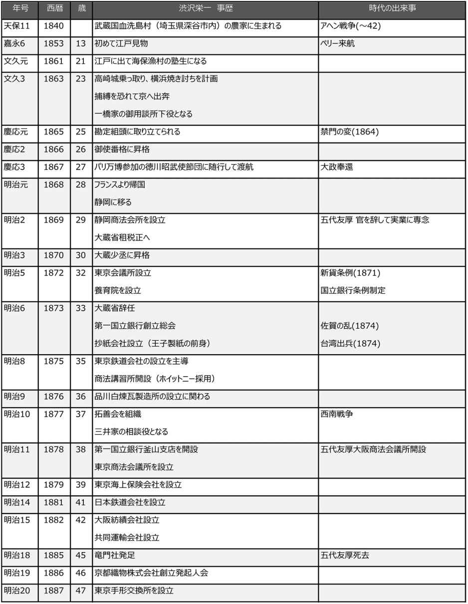
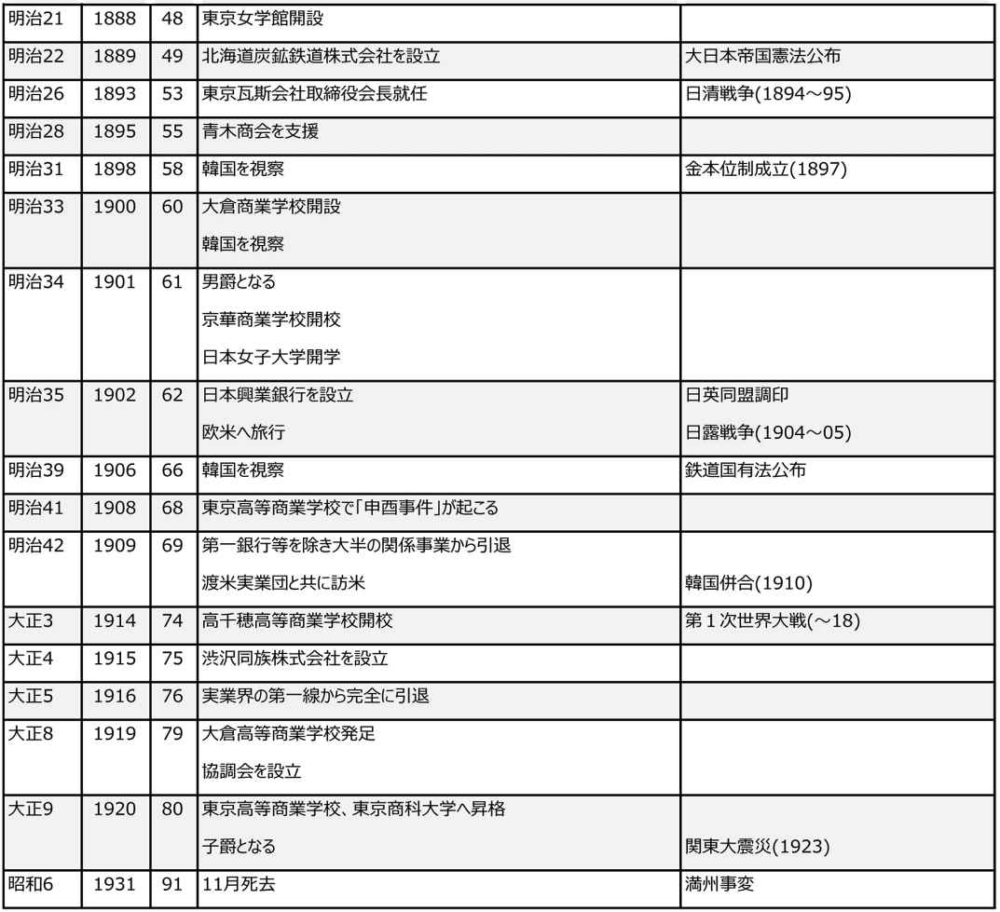
縮約
１．渋沢栄一の青春
生い立ち
渋沢栄一は、1840年(天保11年)、武蔵国血洗島村(現在の埼玉県深谷市内)で生まれた。この村は、交通の要所に位置し、安定していた。栄一の生家は小農家だったが、父の代に周辺村の農家から藍葉を買い入れ「藍玉」という藍染め原料に加工して販売する新しいタイプのビジネスを開拓していた。村内でもトップを争う富農に一気に成長した。稲作が基礎となっていた社会の中で、栄一の家は、普通の社会秩序から外れた存在だった。この父の仕事が、栄一に大きな影響を与えたに違いない。古いしきたりや序列を打ち破る栄一の気風は、このような環境の中で作られた。
影響を受けたのは、ビジネスだけではなかった。栄一の家族は、みな学問や教育に熱心だった。ふつうの農民や商家では適わない武家のような教育を受けることができた。栄一は、書法、四書五経を用いた読み書き、剣法を習った。13歳のとき、彼は初めて江戸の町を見物した。この年、ペリーが江戸湾に来航した。その後、21歳で江戸にある海保漁村の塾生となり、同時に千葉道場で剣法も学んだ。
栄一は、幕末の時代、江戸に遠くない、比較的安定した農村の中で、商売もする兼業農家という恵まれた家庭環境に育った。明治の時代にあって、経済活動に大きな功績を残せたのは、この栄一の若い日の経験によるものだった。
京都で一橋慶喜に仕える
1863年(文久3年)、渋沢が23歳のとき、京都へ旅立った。攘夷を目的とする挙兵の計画(高崎城乗っ取り、横浜焼き打ち)に関与し、捕縛される恐れから逃れるためだった。知人の斡旋により、京都で一橋家の家臣になることができた。一橋家は、最後の将軍となる慶喜 を出した徳川の一族である。渋沢の仕官は低い地位から始まったが、すぐに一橋家の対外折衝を担う「御用談所」の下役に取り立てられた。渋沢が職務上、才能を発揮していったのは自らの出自である家業の経験だった。そのような仕事は、武家出身者にはできず、渋沢の存在は貴重だった。
渋沢の才能は認められ、そして1866年(慶応2年)には、慶喜にアドバイスできる地位にまでなった。慶喜の将軍推挙の話が出たとき、当時の権力闘争の情況を考慮して、多くの弊害を持つ旧体制の将軍職に慶喜が就くことに渋沢は反対した。しかし、慶喜は渋沢の提案を受け入れなかった。渋沢は慶喜の決断について絶望した。さらに幕臣となることで身分は落ちて、もはや慶喜に会うこともできなくなった。
欧州渡航
1867年(慶応3年)パリ万国博覧会が開催された。この万博に関して、フランス駐日公使を通じて日本からの出品と将軍親族の派遣が求められた。慶喜の弟、昭武が選ばれた。随行は総員20名余だった。慶喜の希望があって、随行の一人に渋沢が選ばれた。この派遣団での渋沢の職務は、「書記と会計とを兼ねての職掌」であり、日本へ送る文書の作成、物品の購入、経費管理を一手に担当した。この旅行で、渋沢は多くのものを学んだ。とりわけ、戦争の中にあっても、西欧が経済のインフラを共有することで発展していることを見抜いた。それは、その後の渋沢の行動の基軸をつくるものになった。
昭武は、その後もフランスに留まって勉学をすることになった。渋沢はそのために世話係として残留した。1868年(慶応4年)2月、渋沢は外国奉行支配調役に任ぜられ、栗本駐仏公使の業務をサポートしながら、昭武一行の事務全般を見ていた。渋沢はこの年のはじめには現地の新聞で幕府の瓦解を知っていたが、昭武をなるべく長くフランスで勉強させたいと考えていた。しかし、昭武の水戸家の相続が決まったという報に接して帰国を決意した。
静岡で地元産業の発展に尽くす
明治維新が実現した。しかし、渋沢は新政府に対して興味を持たなかった。昭武に水戸で仕えて欲しいと望まれたが、新政府からの嫌疑を恐れて、この要請を断った。渋沢は、慶喜が隠遁した静岡で働くことを決心し、地域の産業を興すことに興味を抱いた。
新政府は、1868年(明治元年)に、勧業と収税を目的に商法司を設置した。その傘下に、地方の連絡と統制のため、各地に商法会所の設置をはかっていた。その最も重要な役割は、不換紙幣である太政官札を流通させることだった。渋沢は地域の豪商に協力して1869年(明治2年)、静岡商法会所を立ち上げ、そこが自分にふさわしい働き場所だと考えた。
商法会所は、政府が要求する任務のほかに、金融業務や物品の購入販売など、さまざまなビジネスを始めた。渋沢は静岡に移住してくる幕臣に仕事も斡旋した。商売は順調に発展し、1872年(明治5年)に、静岡商法会所は静岡県に引き渡されることになる。静岡での経験は、ヨーロッパで知った経済の知識を試す良い機会になった。
政府への出仕
1869年(明治2年)10月後半、藩庁に新政府太政官弁官から渋沢への召状が届いた。渋沢はしぶしぶ東京へ出向き、太政官へ出頭すると、大蔵省租税正へ任ずるという命令を受けた。当時の大蔵省には、伊達宗城 をトップに、大隈重信、伊藤博文、井上馨のような大物が顔をそろえていた。静岡での事業も比較的順調だったので、渋沢はこの申し出を断るつもりだったが、大隈の熱心な説得により出仕を承諾した。与えられた租税正は、今日の主税局長にあたるほどの高い地位だった。異常な抜擢だったが、当時の新政府には、優秀な人材の不足から、旧幕臣であっても開明的な人材を採用しなければならなかった。
財政を担当していた由利公正は、無防備に不換紙幣を大量に流通させて財政を混乱させていた。これに対して大隈は、由利を退け、財務の実権を握るとともに、大蔵省への集権を進めようと、維新官僚グループを形成しつつあった。渋沢は大隈が集めたメンバーと共に、度量衡や租税制度の改正、そして鉄道施設などまで次々と手がけていった。
渋沢の地位は1870年(明治3年)9月末に租税正として大蔵少丞に昇格し、翌年5月には大蔵権大丞になり、7月には権大丞として制度取調御用掛に任じられ、すぐに権大丞のまま枢密権大史に転任するというスピード出世だった。
貨幣問題
明治新政府は、財政窮乏と殖産興業のために不換紙幣を発行したが、価値の減価から来る流通の不振を招き、国際的な信用を低下させていた。同時に、商法会所や為替会社などの銀行的機能を持った民間組織の設立を後押ししたが、政府の介入過多、商人たちの知識や経験不足から、なかなかうまくいかなかった。
政府は、局面打開のため、アメリカに研究チームを派遣し、国立銀行制度について調査させた。その調査チームが行った提案に基づき、1871年(明治4年)、円を単位とする新貨条例が制定された。渋沢はその起草に携わった。その年の暮れ、ナショナルバンク制度の採用が決定し、翌年、国立銀行条例が制定された。
大蔵省に在籍して、渋沢は第一国立銀行の設立を主導した。第一国立銀行は、渋沢と三井組の合作として計画されたが、実現するまでには多くの対立が解決されなければならなかった。三井組は単独経営を求めていたが、渋沢は合本法式を主張した。
大隈は参議に昇進した後、大蔵省の実権は井上が握っていた。二人は急進的な維新官僚グループの中心だったが、対立が起きた。民部が新しい施策を次々と実行し、財政を圧迫した。積極財政を主張する大隈に対し、井上は緊縮財政の必要を訴えた。1873年(明治6年)、井上は大蔵省の辞任を決め、渋沢もそれに従った。渋沢はまだ33歳だった。井上は、その後、政府復帰を果たすが、渋沢が官に籍を置くことはなかった。
２．実業の世界で活躍
第一国立銀行創設
大蔵省を辞めた渋沢は、すぐに第一国立銀行創立総会を開いた。三井組と小野組がそれぞれ100万円ずつ出資し、一般からの44万円余の出資を加えて1873年(明治6年)、発足した。出資については、渋沢の意見が通った。渋沢は、総監役に就任した。
しかし、翌年、小野組が破産し、第一国立銀行は危機に遭遇した。渋沢の尽力により、損失を最小限に抑え、減資を行って問題を解決した。渋沢が頭取になった。渋沢は、政府の仕事よりも、一般に資金を貸し付けるなど、商業銀行路線への移行を図った。
明治10年代前半は、銀行設立ブームとなり、好景気が到来したが、その後は、松方デフレ政策による不況に襲われ、中小銀行の破綻が広がった。しかし、第一国立銀行は米穀金融のための東北地方を中心にした支店網の拡大、朝鮮半島での業務拡大によって成長していった。
渋沢は、銀行業の拡大とともに、貸付先企業の不足の問題に直面したため、貸付先となる企業を創出していかなければならなかった。
渋沢は、次々と有望な企業を創立させるのである。そこには次のような会社がある。
王子製紙会社の前身の抄紙会社(1873年)、東京鉄道会社(1875年)、耐火煉瓦の製造を始めた品川白煉瓦製造所(1876年)、東京海上保険会社(1879年)、日本鉄道会社(1881年)、のちの東洋紡績となる大阪紡績会社(1882年)、のちに郵便汽船三菱会社と合併して日本郵船となる共同運輸会社(1882年)。
渋沢の経営手法
渋沢が関わった会社の総数は178社を数える。その内訳は、鉄道22、対外事業19、銀行16、諸商工業11、鉱業8、窯業8、化学工業7、電気7、保険6、海運6である。日本の経済近代化に必要な会社を次々と設立した。
これらの会社の設立にあたって、渋沢は必ずしも発起人の中心にいたわけではない。創立総会の議長役を引き受け、役員人事を行った。渋沢という存在は、役員の決定に欠かせなかった。創業初期のトラブルの解決や、不況時の問題解決にも、多くの支援を行った。減資などの合理化策のほか、専任経営者の招聘などによって初期の危機を克服していった。
会社役職に伴う渋沢の報酬は微々たるものだった。収入は主に保有株式からの配当収入だった。保有株式の売却により必要な資金を調達した。近代事業の草創期では、諸事業はリスクが大きかった反面、ハイリターンでもあった。株式への出資だけでなく、運転資金や不測の事態で必要となる資金と信用をビジネスに供給した。渋沢の個人所得は、1898年(明治31年)の高額所得者番付で18位となっている。
渋沢が貢献したのは、会社設立だけではなかった。産業界の啓蒙と取りまとめにも積極的に関わった。1877年(明治10年)には、「択善会」と呼ばれる銀行関係の業界団体を組織した。それは後に、他の組織と統合して東京銀行集会所となる。1887年(明治20年)には、手形を売買する東京手形交換所を設立した。
もう一つの業界団体が東京会議所であった。松平定信が設けた江戸町会所を引き継ぎ1872年(明治5年)設立された。現在の日本商工会議所の前身である。1876年(明治9年)に解散しているが、その中で商工業者の地位向上、民間における条約改正運動の代表機関として、1878年(明治11年)に東京商法会議所が設立された。渋沢は会頭に選ばれ1905年(明治38年)まで27年間にわたって会頭職を務めた。
3．社会・公共事業での貢献
実業界から引退
渋沢は、1909年(明治42年)には、第一銀行を除く大半の関係事業から手を引いていたが、1916年(大正5年)、第一銀行頭取を退き、実業界の第一線から完全に引退した。
引退後に自らが取り組むべき残された3つの事業として、「経済と道徳の一致」「資本と労働の調和」「細民救恤手段の統一」をあげている。
経済と道徳の問題については、単に理念ではなく、団体を設立し、活動を支援した。第一次世界大戦以降における国際社会の変化に注目し、帝国主義の軋轢とマルクス主義の影響について渋沢は悩んだ。経営者に対し、自分の事業の成功は社会の恩であるということを自覚し、社会の救済や公共事業に率先して取り組むことを熱心に説いた。
新事業創出への渋沢の参画は目を見張るものがあるが、社会・公共事業への貢献も異常なほど大きい。渋沢が関わった社会・公共事業の数はおおよそ600団体といわれる。
学校教育と人材育成
教育分野では、実業教育に強い関心を持った。日本全国の商業学校を支援したが、後に官立となった現在の一橋大学の前身となる東京高等商業学校設立にも渋沢がかかわった。最初は、ホイットニーを教師とする私塾形式の商法講習所としてスタート(1875年)したが、1884年に、農商務省の直轄となり、東京商業学校と改称、1885年には文部省の所管となり、高等商業学校に改称、さらに1902年に東京高等商業学校に改称し、1920年(大正9年)に東京商科大学に昇格した(一橋大学という名称になったのは1949年である)。
しかし、そこにまで至る道は容易ではなかった。渋沢は学問の重要性を意識し、1896年(明治29年)の学科課程の改正では、民法や商法、財政学や商業学、機械工学などの科目を従来よりも細分化して独立科目とした。渋沢は、一貫して商工業の地位向上を訴え続けてきた。商工業発展のためには、旧来の経験よりも新しい学識が必要と考えたが、学識を振りかざすことが商工業で成功をもたらさないことを知っていた。学識を活かすには、人格や道理を身につけることが重要だと説いた。
しかし、学内では、学問重視の改革派の勢力が強まった。商業高等学校が、帝国大学に対して一段低く位置づけられていることに学生たちの不満も広がった。大正期になり、渋沢は、学生の知識偏重傾向を厳しく戒めるようになった。知恵が進むほど、人間が浮薄になり、狡猾にする風潮が強まったことを憂いた。渋沢は、社会全般の道徳心の欠如を是正しようと行動を起こし始めた。
宗教の問題への取り組み
渋沢は、社会的な軋轢回避のために、宗教や道徳の統合に期待した。しかし、既存の各宗教の壁を突破することは難しく、人々の心を動かすことの不可能を実感した。宗教・道徳の統一の考えは捨てたが、緊迫する世界情勢には心を痛めた。
とくに最大の関心は、マルクス主義の影響を強く受けた労働問題の登場だった。ロシア革命の影響を受け、欧米では労働組合が急速に発達していた。わが国でも、労働運動が高まり、第一次大戦後の不況が労働争議を頻発させた。このような激動の時代の変化に対し、新しい考え方が必要だった。
この問題に対応するため、1919年(大正8年)、労働問題を専門に扱う官民協力の民間機関である協調会を設立した。協調会は、労働者に対する講習会や講演会の開催とともに、労働争議の調停機能も持っていた。これは渋沢が最も期待した活動だった。協調会による労働争議の調停は、1920年代後半に盛んに行われた。渋沢は、さまざまな考えを持つ新官僚たちの意見を熱心に聞き、実践活動を通じて、労使関係の解決策を自ら模索した。
渋沢は、拡大再生産を前提とする近代資本主義社会をよく理解していた。しかし、同時にそれが生み出す社会的矛盾がわかっていた。使命感を持つ近代経済の担い手となる人材の育成に腐心した。渋沢は、ハンディキャップの人たちも社会の正規構成員と位置づけ、社会に参加できる場を追及した。
４．当時の経済情勢
日清戦争の後
鹿児島に戻った西郷は、開墾に汗を流し、温泉で湯治、犬を連れて好きな猟をして過ごしたが、士族たちの仕事について面倒をみていた。非役軍人や県内士族のために、私学校や賞典学校、吉野開墾社を設立するなどに協力し、救済に努めた。私学校では、軍事訓練のほかに漢学などの講義が行われ、賞典学校では漢学のほか、英語、フランス語を教えた。吉野開墾社では、元陸軍教導団(下士官学校)の生徒を収容し、昼間は原野の開墾、夜間は学問という生活を送らせた。
1874年(明治7年)江藤新平が反乱を起こした時、反乱鎮圧を命じた久光に従わず、敗戦して援助を求めて鹿児島に潜入した江藤も助けなかった。
西南戦争
1894年(明治27年)に日清戦争が起きた。日清戦争後、いずれは避けられないと予想される対露戦に備えるための軍備拡張とインフラ(経済基盤)整備に多額の資金を必要とした。
翌年の日清戦争・講和で、総額3億6,000万円の賠償金支払いが決まった。これの使い方について、政府内で意見が分かれた。松方正義大蔵大臣は、軍備拡張、産業育成の必要性を認めながらも、財政基盤の正常化を重視した。そのため、軍事公債1億円の償還を計画した。一方で、反対派は軍備拡張の急務を強く訴えた。伊藤首相は、軍備拡張と同時に、産業育成を優先する政策を選んだ。松方はこれに反対して大蔵大臣を辞した。
財政基盤の整備確立という課題を犠牲にし、軍拡予算は計画実行段階では3億1,324万円に膨らんだ。そのため軍事公債1億円の償却を行わずに軍事公債1億円を追加発行した。同時に鉄道、事業公債も1億円発行し、合計2億円の財政負担増となった。無理な経済政策がひずみとなって、1898年(明治31年)には財政赤字と正貨準備不足が顕在化し、これがもとになって戦後恐慌となった。しかし、政府は基本的には軍拡路線を維持し財政赤字路線を改めなかった。さらに、有効な金融政策も採用しなかったため、不況は長期化した。
恐慌が発生すると、公債をめぐる事態は悪化した。公債の発行は、国内ではもはや限界に達していた。海外で公債を発行するほかに財源確保の方法はなかった。外資導入には、多くの法律の制定が必要で、中でも、不可欠とされたのは、金本位制の導入だった。
政府への政策提言
1873年(明治6年)に、渋沢は官界から身を引いたが、その後も渋沢と政府との関係は続いていた。経済政策については、積極的に発言した。とりわけ、外資導入や金本位制の採用に関する問題には深く関わった。
渋沢は新聞に寄稿し、清国からの賠償金を過度の軍備増強に費やすことに反対した。その理由として、一時的な軍事費拡大が長期的な財政負担につながる点をあげた。賠償金は経済振興に使うべきだと主張した。
日本が海外で公債を発行するには、金本位制の採用が必要だった。それは強固な通貨制度の確立にも不可欠とされた。この問題には、渋沢も深く関わっていたが、金本位制導入には反対だった。彼の立場は現実主義だった。現行の銀本位は金本位国への輸出を有利に働き、同時に輸入防壁にもなっていることを理由にあげた。この意見は、政府が作った貨幣制度調査会の多数意見でもあった。短期的に見れば、金本位制採用は日本にとって有利ではないと思われた。
金本位制は、1897年(明治30年)に導入された。結果的に、それは、渋沢が懸念するほど日本経済に直接的な悪影響を及ぼすものではなかった。銀本位国である清国への紡績輸出は打撃を受けたが、原料輸入では大きなメリットが得られたのである。しかし、渋沢の懸念は、別の形で現れた。財政赤字が悪化し、正貨準備不足が顕在化した。これが、日清戦争後の恐慌を引き起こしたのである。
この恐慌により、金融逼迫が生じて、金利が上昇し、国内の債券価格が低下したため、内債の公募は不可能な状態になり、外債発行の必要に迫られた。1899年(明治32年)の外債発行は失敗したが、1902年(明治35年)の発行は、日英同盟の成立を受けて成功した。日露戦争前に総額1億4,000万円程度だった外債発行額(国内債の海外売り出しを含む)は、日露戦争後は総額20億円を超えるほどに拡大した。
民間は資金不足の解消策として、外資の活用を望んだ。渋沢はこれを政府に強く求めた。これを受けて、政府は1902年(明治35年)に日本興業銀行を設立し、外資の導入は民間直接ではなく、これを通じて民間に融資を行う制度をつくった。外資の導入管理を政府が行うことに政府は固執したためである。
軍事拡張基調の積極財政策によって民間経済は逆境が続く中で喘いでいた。渋沢は、日本経済の将来について危機感を抱いており、日本経済を取り巻く環境の変化をはっきりと意識していた。日本の民間資本が真の国際競争力を備えなければならないというのが渋沢の考えだった。政府による安易な民間救済はかえって体質を悪化させると渋沢は主張した。日本興業銀行の設立は、渋沢の意図を挫折させた。
しかし、渋沢がとってきた民間主導の手法では成し得ないほど、世界経済における国家の役割は増大していたのも事実だった。経済規模は拡大し、経済発展に必要なインフラの規模は飛躍的に拡大した。渋沢は、この時期、日本企業の対外的な国際競争力強化のためには、国内産業保護育成政策も必要だと感じ始めていた。それは従来の渋沢の自由競争路線から保護主義を是認する転換であった。
日露戦争後の大幅な外資導入と鉄道国有化による余剰資金供給が、企業投資を刺激した。新たな好況局面が続いた。新産業の勃興は、渋沢の予想を超えるものになった。だが、一方で、それは莫大な外債依存を残した。鉄道国有化は、苦境時には政府の救済を頼むという悪しき前例を作った。渋沢が求めた、民間の力で国際競争に打ち勝つ体質転換を実現するという考えは、この好況の中で埋没したのである。
５．渋沢栄一の理念
知識と実業
渋沢栄一の思想は、彼の特殊な経歴に起因する。彼は、農業兼業商人の家で育ち、例外的に武士となり、経済的才能が認められ、大蔵省の重要な役職に就いた。その多様な経験は、彼に異常な能力を与えた。中でも、パリ万博への参加のためヨーロッパに滞在し、西洋の最新の文化や技術を知ったことは、彼の貴重な体験であった。
官の仕事よりも民間の産業発展を自分がなすべき職業として自覚した渋沢は、国主導ではなく、民間企業が国際競争力を持つことが日本を発展させると信じた。渋沢は、商工業の発展のためには、旧来の経験よりも新しい学識こそが必要であり、同時に、商工業者の地位向上の証となって、商工業での成功が人としての社会的な名誉につながらなければ発展はないと考えていた。しかし次第に、経営者には経営能力だけでなく、人格や道徳を求めるようになる。
渋沢は、「国家は、政治・軍備・法律さえあれば維持して行けると考え、世間の頭脳ある人はその方向に向かって力を傾けた」と、商工業軽視の風潮を指摘し、「国家全体の富が増えなければ、国は強化されない。それには商工業が不可欠である」と、実業が主体になる必要性を説いた。
それには、「協調の精神と強い意志が必要である。そうした人々が多数集まれば、強い国家がつくられるだろう」と、渋沢は主張し、そうした考えのもとに若い世代の企業人の教育に力を入れた。
東洋思想を啓蒙
渋沢の考えは、日本に限定されなかった。1913年(大正2年)にアメリカで起きた日本人移民の排斥運動、そして翌年1914年の第一次世界大戦の勃発について、今日の世界はまだ文明が足らないと渋沢は言った。そして、このような情勢の中で、日本は国家としてより強くならなければならないが、「自分が望まないことは、他人にも施してはならぬ」という東洋流の道徳を世界に広め、平和を維持しなければならないと説いた。
弱肉強食という欧米による国家的エゴイズムを克服するにはどうすればよいか。日本がイニシアチブをとって、国内道徳のみならず、国際間において真の王道を実現しなければならないと渋沢は思った。
こうした啓蒙活動を行う場として、竜門社ができた。最初は、渋沢の家に寄宿していた書生たちの集まりから出発した。やがてそれは、若い世代にミドルマネジメントを教える組織へと発展した。月次の集会が開催され、講演者の意見について議論がなされた。
欧米や韓国での経済やビジネスに関心が集まった。渋沢の考えが、この組織のバックボーンだった。そこで話された内容は、渋沢の晩年の著書『論語と算盤』に収められている。渋沢は、教養と人格に支えられたビジネスの実践教育の重要性を主張した。時代とともに、学問が、実践と離れていくことを危惧した。
晩年、渋沢は、国際的環境の中で、国家の重要性をより強く認識するように考えを変えた。完全な民間主体のリベラリズムから離れ、国家主導の必要性も認める考えを強くした。しかし、民にこそ国の力が示されるという渋沢の理念は不変だった。
1932年(昭和6年)に、病気のため亡くなった。91歳だった。渋沢の長い生涯をかけて追い求めた社会が完全に実現したわけではなかった。挫折を繰り返し、反対にあいながら、新たな地平をもとめて思考と行動を続けた渋沢の思想はいまも生きている。
広岡浅子 気高き生涯
明治日本を動かした女性実業家
長尾剛 著
PHP研究所
2015年10月
ISBN：9784569764245
目次紹介
序章
第１章 走る。走る。走る。
―実業家としての広岡浅子
第２章 女性の教育と自立を目指して
―教育者としての広岡浅子
第３章 浅子が目指したもの、求めたもの
―キリスト教徒としての広岡浅子
終章 浅子の最後の仕事
原著者紹介
長尾剛 (ながお・たけし)
長尾剛氏は、1962年東京都生まれ、東洋大学大学院修了。作家として活躍。文学・歴史・思想等を平易な文体で評論・解説することを主なテーマとしている。また漫画・アニメ・ゲーム等のサブカルチャーにも造詣が深い。
幅広いジャンルに多くの著書があるが、歴史・思想関係では、『現代語ですらすら読める新釈「蘭学事始」』(PHP研究所)、『話し言葉で読める「西郷南洲翁遺訓」』(PHP研究所)、『日本外史 幕末のベストセラーを「超」現代語訳で読む』(PHP研究所)、『志の見つけ方 話し言葉で読める言志四録』(PHP研究所)、『日本がわかる思想入門』(新潮社)、
『陽明学がわかる本―武士道の源流 日本人の人生美学をさぐる』(PHP研究所)、『論語一語』(かんき出版)などがある。
要旨
京都の豪商出水三井家のお嬢様から大阪随一の両替商加島屋を経営する広岡家に嫁いだ浅子は、子どもの頃から商売に興味を持っていた。幕末、大名に貸していたお金が回収困難になり、加島屋も苦境に陥る。浅子は、大名家を訪れ、少しでも返済してもらおうと駆け回った。さらに新政府になり、両替商は存在が難しくなり、ほとんどの両替商は消え去る運命にあった。浅子の努力で、何とかのれんだけは守ることができた。加島屋は炭鉱事業に乗り出した。浅子自らが買収に動いた筑豊の潤野 炭鉱に出向いて炭鉱夫を励まし、10年かけて経営を軌道に乗せた。銀行業、生命保険業にも進出した。いずれの事業も順調に成長し、浅子は関西一の女性実業家として知られるようになった。
幼い頃からの浅子の疑問は、なぜ女性は男性と同じような仕事をさせてもらえないかということにあった。広岡家では、夫の信五郎の理解があって、男以上の仕事を思う存分できた。他の女性にもそのような機会をつくることが生涯をかけて自分のやるべきことだという信念を持った。
炭鉱事業も、銀行事業も軌道に乗り安定した1897年(明治29年)、浅子は成瀬仁蔵に出会った。成瀬の女子高等教育の必要性を説く女子教育論に感激し、日本女子大学校構想の実現に手を貸すことを決めた。浅子が動くと速い。錚々たるメンバーを揃えて発起人会を開き、設立準備を進めた。しかし、必要な資金を集めるには時間と努力が必要だった。浅子の実家、三井家が所有する東京・目白台の土地5500坪を、校地にと寄付してくれた。成瀬が夢見た日本女子大学校は、浅子の努力で、1901年(明治34年)に開校した。
1904年(明治37年)に夫・信五郎が亡くなり、浅子も娘婿の広岡恵三に後を託し、事業から手を引いた。その後は、御殿場の別荘で勉強会を開いて人材を育成するなど女子教育普及に力を入れ、婦人雑誌などにも寄稿した。浅子の連載記事に、自叙伝「七十になる迄」を加えて、本が出来上がった。翌年、1919年(大正8年)浅子は静かに旅立った。
コメント
女性が職場で働くことすら難しかった明治の時代に、一介の女性が、金融業、保険業、そして炭鉱業まで、洋式の制度を採り入れ、成功させたというのは驚きである。それにとどまらず、女性の自立のために奮闘した。成瀬仁蔵あっての日本女子大学校だが、浅子の貢献なくして実現はしなかったであろう。
明治の時代、女性の地位向上、活躍の場をつくるために活動した女性は浅子以外にも大勢いた。今日も、フェミニズム論が盛んだが、日本は古代より男尊女卑の思想はなかった。平安時代は紫式部をはじめ女性が輝いた時代だった。「男尊女卑の思想が固定したのは、儒教を重んじた徳川時代からで、明治はそれを引き継いだ」と原著者の長尾氏は述べる。
日本はもっと女性問題についての歴史を世界に向けて発信すべきだ。広岡浅子の伝記を読んで、改めてその思いを強くした。
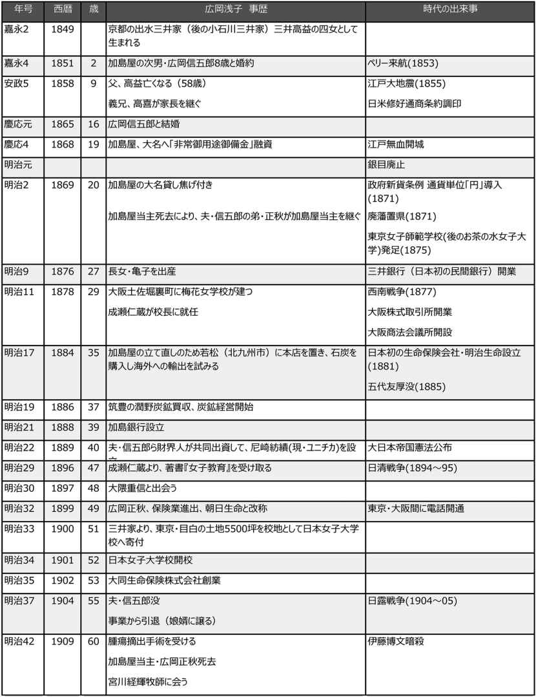
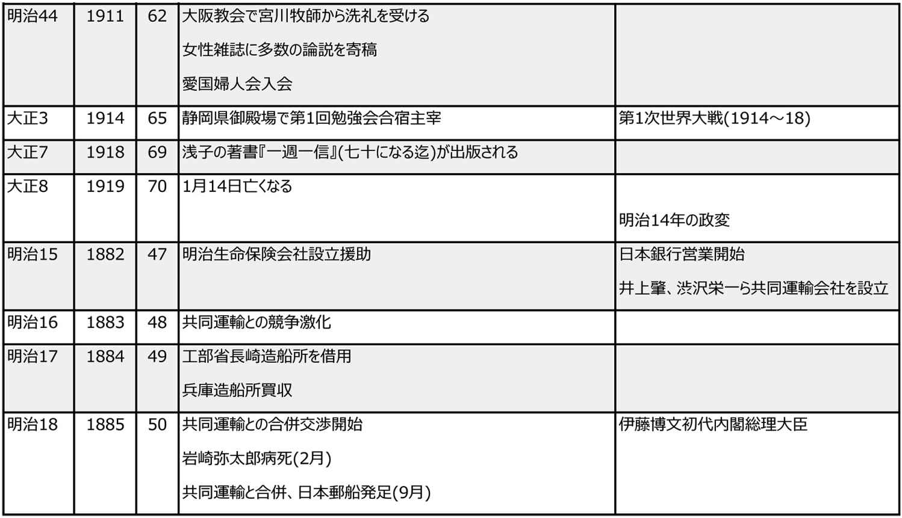
縮約
１．実業家としての広岡浅子
生まれ
広岡浅子は、1849年(嘉永2年)、京都の豪商・出水三井家(のちの小石川三井家)三井高益の四女として生まれた。三井家の祖先は、室町時代までは武家の家系だった。それが江戸時代に入ってから商いをはじめ、当初は、酒屋や質屋をいとなんでいたが、呉服店や両替商など多角経営を進めて発展させた。2代目三井高俊の代に、一族の結束を強固にするため、一族を8家に分けてこれを本家が統括する形にした。さらにのちに11家に分かれる。浅子の父の三井高益(1800-1858)は小石川三井家の6代目である。
高益は、1858年(安政5年)に他界した。浅子が結婚する7年前である。跡継ぎがいなかったため、養子を決めており、三井高喜(1823-1894)が小石川三井家の7代目当主となった。浅子にとっては義理の兄にあたるが、浅子より26歳も年上の高喜は兄として浅子に温かく接し、浅子も気兼ねなく相談できる相手だった。
加島屋に嫁入り
浅子は、1865年(慶応元年)、加島屋を営む広岡家に嫁いだ。加島屋は大阪で1、2を争う両替商だった。相手は、浅子が2歳のときから結婚が決まっていた広岡家の次男広岡信五郎(1841-1904)である。信五郎は浅子より8つ年上だが、商売より道楽が好きで、長男が早くに亡くなったため、後を継ぐべきだったが、弟の正秋に当主を譲った。のんびりした性格で、勝気の浅子のよき理解者であり、浅子のやりたいようにやらせた。
両替商の滅亡
大名に大金を貸し、庶民を相手の両替の商売は繁盛していた。しかし、幕末の混乱は両替商を一気に谷底に突き落とすことになった。財政危機に瀕していた大名たちは、強引に両替商から借金をした。両替商の蔵からどんどんカネは消え、代わりに証文(借用証)の束で埋まっていた。
新政府になり、さらに追い打ちがかかった。新政府は1868年(明治元年)、「銀目停止」の法令を出した。簡単にいえば、「これからは銀は使わず、金で貨幣流通させる」というのである。これを知った人々は、銀がダメになると思い、金に替えてくれと、両替商に駆け込んだ。両替商の蔵には、価値が暴落一途の銀が残った。
楽天家の信五郎もさすがに途方に暮れた。「大丈夫だ、うちに任せて」と浅子は立ち上がった。浅子は、大福帳をつぶさに調べ、貸し付けている大名家から少しでも返済回収をしようと、各藩の家老宅へと足繁く通った。どこも返済する余裕はない。頭を下げて支払延期を頼む者もいれば、相手が女だとみくびって、高飛車に追い返そうとする者もいた。そのときも、浅子は怯まなかった。武士なら約束を守るのが武士道ではないかと詰め寄った。毎日、貸金の回収に走り回る一方、嫁入り道具を売り、出費を抑えて、生き残りをかけて必死に戦った。
さらに、時代は浅子たち商人を徹底的に痛めつけることになった。新政府は、国の財政を立て直すため、1871年(明治4年)廃藩置県の発令を出した。藩がなくなり、各藩の負債は、新政府が肩代わりすることになったが、その返済のやり方がひどかった。
1843年(天保14年)以前の負債は破棄する。1844年(弘化元年)から1867(慶応3年)までの負債は、無利息50年年賦で分割返済する。1868年(明治元年)から1871年(明治4年)までの負債は、4分利の25年年賦で返済するが、現金ではなく「公債」で返すというものである。
これで全国の両替商が貸していた900万両(今の4,500億円に相当)の借用証は事実上不渡りとなった。ほとんどの両替商は倒産した。以前から大名への借用証は紙くずになるかもしれないと浅子に忠告していた三井高喜は、先見の明で、新政府といち早くパイプを作ることに成功し、なんとか生き延びた。加島屋は一歩出遅れたが、浅子の獅子奮迅の努力で、どうにか加島屋ののれんだけは守り切った。倒産は免れたのである。加島屋の当主広岡正秋(信五郎の弟)も力を尽くした。
石炭に目をつける
1871年(明治4年)には、新貨条例が定められ、日本の貨幣の単位は「円」になった。もはや両替商というビジネスは通用しなくなった。
何か新しい商売を考えなければならない。そんなとき、夫の信五郎が外で聞いた話として、炭鉱業はどうかと意見を出した。浅子はこの考えに飛びついた。これからの日本にとって、石炭は欠かせないものになる。石炭を掘れば、加島屋はきっと大きな儲けができる。浅子の胸は躍った。
江戸時代末期から、ほそぼそと石炭を掘るようになっており、本格的に炭鉱開発に乗り出す藩も現れていた。とは言え、いずれも小規模のもので、石炭を見たことがない人がほとんどだった。正秋の意見を聞いたところ、石炭の出る山を買う資金をどうするのかということになった。信五郎は気落ちしたが、浅子は、私が何とかするとすぐさま行動を開始した。
しばらくして、浅子は九州の筑豊で、山を売ってもいいという山主を見つけてきた。
売り主に頼んで、手付金を支払い、残りは石炭の儲けで分割払いにすることにしたと浅子は言った。こうして広岡家は、炭鉱開発という新規ビジネスに参入した。1886年(明治19年)、浅子が37歳のときである。蒸気機関車による鉄道があちこちで開通しはじめ、石炭需要は一気に高まる気配だった。
加島屋が手に入れた炭鉱は、潤野 炭鉱(現・福岡県飯塚市)である。浅子は、自ら九州にある炭鉱に出かける。荒くれ男がいる山に、女性、それも経営者自らが行くということは、考えられないことだった。しかし、周囲が止めるのも効かず、浅子は実行する。
炭鉱夫たちは驚いた。女に何ができると嘲り笑いするだけでなく、山の仕事をなめているのかと憤る者さえいた。浅子はそうした態度に少しもたじろがなかった。石炭を掘れば儲かる。儲かれば、皆にも分け前を増やせると、声を張り上げた。山で寝泊まりもし、自ら坑内に入ることもあった。炭鉱夫たちの浅子を見る目が変わった。
しかし、炭鉱の経営は予想以上に厳しかった。10年以上、赤字が続いた。周囲はもうこれ以上もたないと失望する中、浅子は今にもっと多くの石炭が掘れるようになるとあきらめなかった。その努力が実って、1897年(明治30年)、採掘量は飛躍的に増えて、これ以降、収益も順調に伸びていった。
この潤野炭鉱は、1899年(明治32年)、官営八幡製鉄所への石炭供給源として国へ売却、官営製鉄所二瀬炭鉱となっている。
加島銀行設立
浅子は、炭鉱事業を始めてまもなくの1888年(明治21年)、銀行を設立した。名前は「加島銀行」を名乗った。炭鉱経営と違い、銀行業は加島屋の両替商の延長にある。銀行経営でも、浅子の腕は冴えた。女性銀行員を採用して世間を驚かせた。経営は順調だった。
加島銀行は、のちに起こる昭和恐慌のあおりを受けて1937年(昭和12年)廃業した。
大同生命設立
1899年(明治32年)、広岡家は生命保険業に進出した。日本で初の生命保険会社(明治生命)が設立されたのは意外に早く、1881年(明治14年)である。その後、いくつかの生命保険会社が立ち上がっていた。
1895年(明治28年)、浄土真宗の門徒を主な対象とする「真宗生命」が名古屋に誕生した。しかし、寺のお坊さんたちに経営は無理で、4年ほどで経営は悪化した。広岡家は、宗派が浄土真宗であり、しかも関西最有力の檀家だったこともあり、その経営を引き継ぐことになったのである。社名を「朝日生命」とした(今日ある朝日生命とは無関係)。
しかし、経営は思わしくなかった。そこでまた浅子が動いた。浅子は、生命保険業は規模の拡大が不可欠と読んだ。そこで、他の生命保険会社との合併を考えた。当時、経営がうまくいっていない中堅の生命保険会社がいくつかあった。これらの会社との交渉は、経営が思わしくない朝日生命が話しかけても信用されないと浅子は考え、その交渉役に中川小十郎(1866-1944)を選んだ。中川は、帝国大学で夏目漱石と同窓であり、卒業後は高級官僚として近代日本を支えた人物である。ビジネスの手腕もあり、浅子たっての望みでこの頃は広岡家を助けていた。
中川の尽力により、1902年(明治35年)、朝日生命、護国生命、北海生命の3社が合併し、新しい生命保険会社が誕生した。新社名は「大同生命」となった。経営基盤は強化され、顧客からの信頼を得た。初代社長には広岡正秋が就任した。また、浅子の一人娘・亀子の婿となった広岡恵三(一柳恵三)が大同生命で腕を発揮した。大同生命は、浅子が創立した幾多の事業の中で、唯一現存するものである。
事業から手を引く
1904年(明治37年)、夫の広岡信五郎が亡くなった。結婚して40年近く、商売のことはほとんどしなかったが、信五郎の理解と陰ながらの応援がなければ、浅子もこれほどの成果をあげることはできなかったであろう。信五郎にすれば、浅子がいてくれたおかげで加島屋ののれんを保つことができた。波瀾万丈の半生だった。しかし、その努力は報われ、浅子に関西一の女性事業家としての名を残した。
浅子は、このとき一切の事業から手を引くことを決心した。娘の亀子と婿の広岡恵三を呼んで、引退の意思を伝えた。恵三は快く後を引き受けて期待に応えると返事した。浅子が55歳のときである。その後の浅子の人生は、商売から教育へと移る。
２．教育者としての広岡浅子
成瀬仁蔵との出会い
浅子は、子どもの頃から、なぜ女性は男性のように勉強も仕事もさせてもらえないのかということに強い疑問を抱いていた。そして自らビジネスの世界に飛び込み、男もできないような仕事を成し遂げた。しかし、常々思っていたことは、女性が男性に負けずに仕事をするには、教育が必要だということだった。
そのような折、偶然に、加島銀行の上得意からの紹介で、一人の男性が浅子を訪ねてきた。名前を成瀬仁蔵といった。
成瀬は、長州の生まれで、武士だった父の私塾を手伝い、山口県にできた「教員養成所」に第2期生として入学し、近代教育について本格的に学んだ。そして、長くアメリカにいた人物との出会いが、成瀬の人生を決定づけた。宣教師となっていたその人の話を聞き、成瀬はキリスト教に傾倒していった。洗礼を受け、キリスト教徒となった。
大阪のプロテスタントの会「浪花公会」が「梅花女学校」を開校した。成瀬は、その学校の校長を頼まれ引き受けた。給料もままならない経営難の学校を一人で業務を担った。しかし、経営方針で意見が会わず、梅花女学校を去った。辞職後、成瀬は正式に牧師の資格を得た。そして、新潟へ向かった。新潟では教会の牧師、女学校の校長と、孤軍奮闘の日々を送るが、その女学校は経営不振のためで廃校となった。だが、成瀬は挫けることなく、これを機にその後、アメリカへ留学した。成瀬はアメリカの見聞によって、欧米とは異なる、日本女性のための高等教育の必要性を痛感した。
帰国した成瀬は、日本に本格的な女子高等教育の機関を作ろうと決意していた。広い人脈があり、紹介されれば誰にでもすぐに会いに行き、教育論を語り、日本女子大学校の構想を話した。
紹介されて浅子を訪ねたのは、女子大学校設立に必要な資金の援助を頼むのが目的ではなかった。それよりも、女性ながら最先端の事業を手掛け、成功させ、関西一の女性実業家になっていた浅子に、女子教育についての自分の意見を聞いてもらうためであった。
1896年(明治29年)、出版したばかりの成瀬の著書『女子教育』を浅子に手渡し、読んで欲しいと頼んだ。それは運命的な出会いだった。成瀬が尋ねられるまま女子教育についての考えを話し始めたとたん、浅子は電撃を受けたように反応した。まさに、浅子が考えていたことだった。帝国大学に匹敵する女性のための大学をつくるという成瀬の構想を聞き、驚いたが、これこそ自分がやらなければならない仕事だと思った。
成瀬が、広岡邸を去ったあと、浅子は『女子教育』を一気に読み終えた。すぐに成瀬を呼び出し、その場で、成瀬に協力と支援を約束した。
成瀬の考えは、「良妻賢母」ではなく、「賢母良妻」だった。男が絶対太刀打ちできない女性の本質は「母であること」だ。わが子だけでなく、他の人間も包み込み、慈しむ存在であり、これこそ神が女性に与えた務めだと言った。女性の天性である「母であること」を発揮するには、学ばねばならない。賢くならねばならない。誰もが「賢母」なることこそ、女性の使命だと思いのたけを語った。
わが国は、古代より男尊女卑の思想はなかった。女性は男性に劣ることのない存在として活躍した。その日本古来の伝統が壊されたのは、徳川家康が、武士を統御するために有効と考えた儒教が広く武士階級の間に広まったためである。その伝統は、明治に引き継がれた。
日本女子大学校と浅子
まだ、事業に忙殺される浅子だったが、日本女子大学校を実現するため、成瀬を助けながら、猛進した。1897年(明治30年)3月には、日本女子大学校の第1回発起人会が東京で、30名の出席のもと開かれた。浅子は選ばれた11名の委員の一人に加わった。成瀬も委員になった。委員長は、貴族議員議長、学習院院長の近衛篤麿 (1863-1904)である。渋沢栄一は会計監督を請け負った。翌日帝国ホテルで開かれた創立披露会には、国会議員、新聞記者、各界有力者が大勢集まった。成瀬は、女子高等教育の必要性を参加者を前に熱弁をふるった。
しかし、ここまで来てもなお、日本女子大学校実現への道は遠かった。成瀬が当初見積もった30万円(現在の価値で約60億円)は、これだけ錚々たる顔ぶれが並んでも、容易に集まるものではなかった。
一時は暗礁に乗り上げた日本女子大学校の構想も、成瀬や浅子の地道な活動が実を結び、資金は10万円を超えた。本格的な準備作業が始まった。東京か大阪かで意見が分かれたが、浅子は東京を主張した。よい学生が東京のほうが集まりやすいというのがその理由だった。そして、学校の敷地として、浅子の実家である小石川三井が、東京目白台に持っていた5500坪の土地を寄付することになったのである。
いよいよ日本女子大学校の設立が実現する。初代校長には成瀬が就任した。創設委員には、総勢32名の各界著名人の名がずらりと並んでいた。しかし、その中に広岡浅子の名前はない。女性の名前があればまた騒ぐ人がいるだろうという浅子の配慮だった。代わりに広岡信五郎が加わった。
1901年(明治34年)4月、日本女子大学校は開校した。第1期入学生は510名だった。
女性教育に奮闘
夫・広岡信五郎の死を機にビジネスから手を引いた浅子は、以前にも増して上京して日本女子大学校に通う日が増えた。さまざまな講義に出席して生徒とともに学び、学校の図書館で読書にいそしんだ。多くの雑誌社が、エッセーや時事評論の執筆を依頼してきた。当時、女性向け雑誌の創刊ラッシュを迎えていた。浅子は執筆依頼をすべて引き受けた。
侯爵の近衛篤麿が全面的ニバックアップしていた愛国婦人会に縁あって入会した。この団体は、明治の婦人活動家・奥村五百子 が1901年(明治34年)に創設した全国的な女性の団体である。当時は、戦没将兵の遺族や廃兵への救援を目的として活動していた。奥村は、幕末、尊王攘夷の活動にも身を投じ、義和団事変の時には、慰問団の一員として自ら戦地に赴いた。そして、帰国後に愛国婦人会を立ち上げた。
しかし、愛国婦人会は、上流階級婦人のサロンのようになっていた。戦争の犠牲となった将兵とその家族への金銭的支援のための寄付金集めに終始していた。奥村会長に会った浅子は、お金を渡すだけでは意味がない。残された妻が自立し、自分の力で子どもを育てる気概が必要だとし、その具体策として「授産所 」を提案した。この案は実行され、働くための技能習得や、就労の手助けを行った。多くの人たちから感謝の声が会に届いた。
腫瘍摘出手術
1908年(明治41年)の冬、浅子は、病に倒れた。30代の頃から胸に腫物ができていたが、このことを誰にも言わなかった。それが悪性の腫瘍となっていた。その手術は、日本で最初に胃がん手術を成功させた帝国大学医学部教授の近藤次繁 (1866-1944)が行った。
手術は成功した。浅子は、手術の前は、この病は神が与えた自分への試練だと思っていた。手術後、浅子はキリスト教へと傾倒していく。九死に一生を得たのは、神が自分にまだ世の中のために働けと命じているのだと悟った。成瀬の影響が大きかった。成瀬の友人のキリスト教牧師宮川経輝 から、キリスト教について教わることになり、1911年(明治44年)暮れ、洗礼を受けた。
浅子は、家のため、人のために、必死に戦った。自分がしなければ何も解決しない日々だった。誰かにすべてを預け、頼ることができる相手はいなかった。浅子が実感した神は、浅子に試練を与える厳しい存在であるとともに、浅子を抱き寄せるように包んでくれる優しい神でもあった。初めて、心からの安らぎを知ったのだった。
３．浅子のもとに集まった女性たち
なぜ女は男と肩を並べて仕事ができないのか
浅子は、広岡家に嫁いで、信五郎の理解の下、男子顔負けの仕事を成し遂げたが、世間一般の女性の地位は低く、家事に専念して夫の言うがままに従わなければならないことに憤りを覚えていた。女性が男性と同じように仕事をするには、技能を身につけ、知識を高めなければならないと信じていた。
成瀬仁蔵に出会い、日本女子大学校の設立で、一応の目的は果たした。しかし、浅子の夢は、やはり女子教育だった。自ら何かできないか。
日本女子大学校の教壇に立って教えるのは自分には相応しくないと考えた浅子は、小さな勉強会を静岡県御殿場にある別荘で開くことを決めた。1914年(大正3年)夏、第1回の勉強会合宿が開かれた。参加者は、広岡家や三井家にゆかりのある十数人の小さな勉強会だったが、日本の女子教育問題や女性の地位向上などについて語らい合い、充実した1週間を過ごした。浅子は満足した。
翌年も開催した。成瀬の口利きもあって、人数は若干増えた。そして第3回目となる勉強会には、浅子が敬愛する宮川牧師が講師として参加し、大いに盛り上がった。このとき参加した者の中に、将来、女性政治家として活躍する市川房江と、『赤毛のアン』を翻訳し戦後に出版した、童話作家の安中花子(のちの村岡花子)がいた。共にまだ23、4歳の若さだった。浅子はこの二人に、常人にはない輝きを見ていた。
最後の仕事
広岡財閥の事業はすべて順調だった。日本女子大学校も年々着々と伸びている。ささやかな勉強会も人材を世に出す手伝いができた。浅子に思い残すことはなかった。
1917年(大正6年)、日本組合基督教会の週刊誌『基督教世界』に連載記事を書き始めた。タイトルは、『一週一信』で、連載は約1年続いた。御殿場での勉強会に出席してくれた小橋三四子がこれを本にして出版したいと言ってきた。小橋三四子(1883-1922)は、日本女子大学校の第1期生で、読売新聞内の「よみうり婦人付録」の編集主任を務めた日本の女流ジャーナリストの先駆者だった。女性のための雑誌を作りたいと婦人週報社を立ち上げていた。連載記事に加えて、浅子の自叙伝「七十になる迄」を加えることになった。タイトルは、連載そのまま『一週一信』とした。
出来上がったばかりのその本を手にした翌年、1919年(大正8年)1月、浅子は静かに旅立った。
津田梅子
吉川利一 著
中央公論新社
1990年8月
ISBN：9784122017351
目次紹介
緒言
第１章 家庭
第２章 少女時代
第３章 帰朝前後
第４章 華族女学校時代
第５章 女子英学塾時代(その1)
第６章 女子英学塾時代(その2)
第７章 教育者としての女史
巻末の一言 福島四郎
原著者紹介
吉川利一 (よしかわ・としかず)
吉川利一氏[1888-1968]は、1914年(大正3年)早稲田大学文学部哲学科を卒業。同年、津田梅子が創立した女子英学塾(現・津田塾大学)の幹事に就任し、つねに創立者津田梅子の傍らにあって、塾の重要な問題に参画し、運営に尽力した。在職29年ののち1953年(昭和28年)に退職した。ロックやカントの認識論、杜甫長詩の研究を行い、著著には本書のほか、『杜甫の遺産』、訳書にアダムス著『教育学説の進化』(共訳)がある。
要旨
津田梅子は、北海道開拓使の募集に応募し、1871年(明治4年)、わずか7歳のとき渡米した。10年間をジョージタウンのランメン宅で過ごした。日本に帰ってから、言葉の問題で不自由し、働きたくとも仕事がなかったが、伊藤博文から家庭教師になって欲しいといわれ、そのかたわら桃夭 女学校で英語を教えた。その後、創立された華族女学校の教授になる。1889年(明治22年)から3年間アメリカに留学、生物学を学び、師範学校にも在籍した。帰国後、華族女学校に復帰、女子高等師範学校でも英語を教えるが、1900年(明治33年)、決意して女子英学塾を設立、塾長に就任した。
女子英学塾は順調に成長を遂げたが、経営は常に厳しい局面に立たされ、梅子は奮闘した。収入の不足はもっぱら寄付金に頼ったが、日本に呼び寄せたハッホンの貢献が大きかった。1923年(大正12年)の関東大震災では、麹町五番町にあった校舎が全焼してしまったが、これもロックフェラー記念財団など、アメリカでの寄付金集めで再建を果たした。
津田梅子の指導法は厳しかった。その甲斐あって、日本女子大学校と並んで1904年(明治37年)に専門学校の認可を得た。翌年には、英語科教員無試験検定が許可された(2番目にこの資格を得た女学校は日本女子大学校で1923年になる)。
晩年は病に苦しみながらも、学校経営と教育を続けた。1919年(大正8年)に、塾長辞任を申し出たが、後継者がなく、塾長代理を置いて女子英学塾の運営が続けられた。少数の精鋭的人材を育成することをめざし、少人数教育を続けた。女性の地位も意識も低く、女性進出の機会がなかった明治の時代、女性の高等教育のパイオニアとして果たした貢献は大きい。
1929年(昭和4年)、病気のため65年の生涯を閉じた。その後、女子英学塾は、大震災の直前に購入した北多摩郡小平村に移転、1933(昭和8)年には創立者津田梅子を記念し、津田英学塾と改称、戦後、津田塾大学として再スタートした。
コメント
わずか7歳の少女を政府が米国留学生に選ぶというのも、今日では考えられない。開拓使の募集に申し込んだのはまだ7歳の津田梅子を含む5名の女性しかいなかったためだが、梅子の父、津田仙の存在がなければ実現していない。
仙は、下総の佐倉藩の武士を辞めて、築地にある唯一の洋風旅館に勤務し、西洋野菜が不足していることを知り、自ら麻布に土地を求めて農園を拓いた。知識ゼロから洋書に学びながらアスパラガス、苺などの栽培を手がけ、事業を成功させ、広大な農園をつくった。札幌農学校ができる半年前に農業学校を創設し、一時は、慶応義塾に並ぶほどの評判を得た。津田仙という人の生きざまは梅子の話とは別に興味を引く。
膨大な数の津田梅子の書簡や文書が残されている。幼くして英語で教育を得たのだから英語がすぐれているのは当然だが、わずか9歳のとき日本の記憶について書いた文章を見れば、この年齢でこれほどのことが書けたのが不思議なくらいである。当時のアメリカ人の同年輩の子供よりもすぐれていたという。そういう賢い梅子を、聡明なランメン夫妻はわが子のように可愛がった。ランメン夫妻の影響は、津田梅子の人格をつくったのであろう。
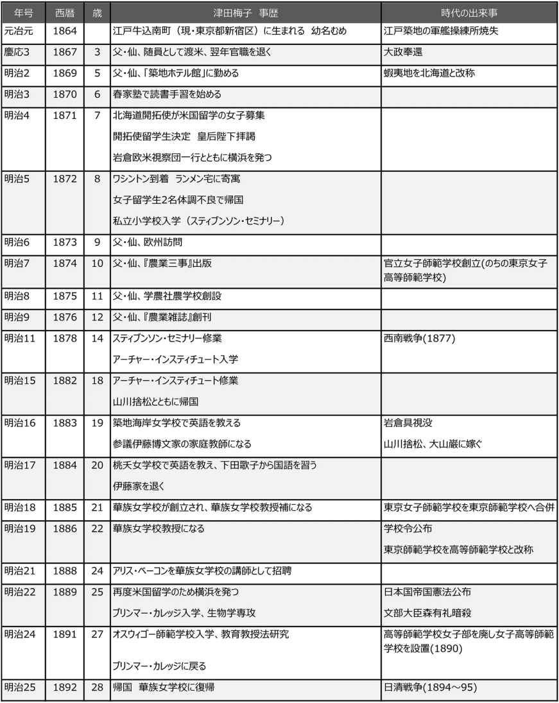
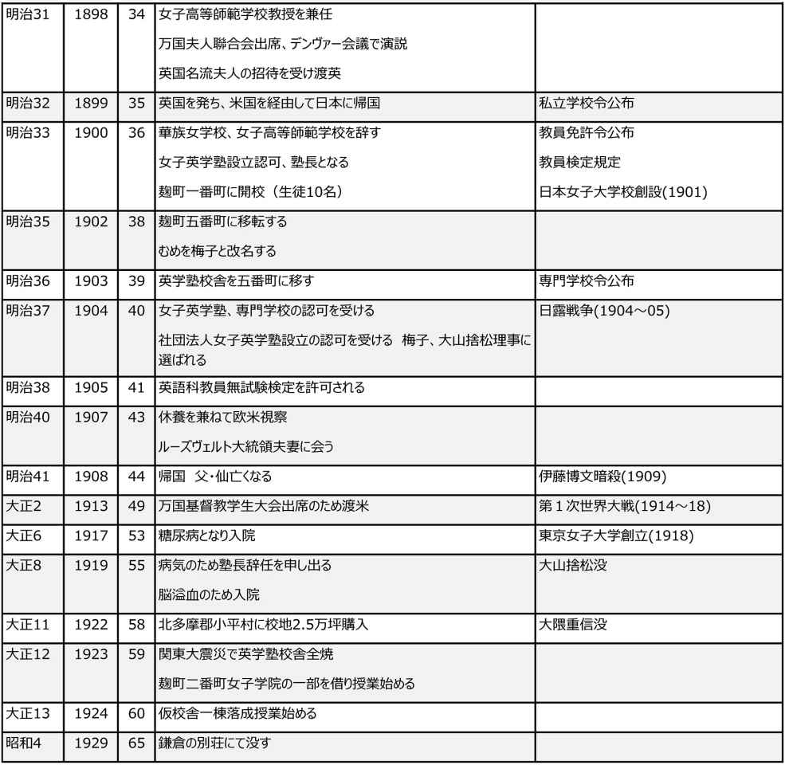
縮約
１．父、仙の存在
英語を学ぶ
津田梅子の父、津田仙(25歳のとき津田栄七の婿養子となった)は、明治初期において、波瀾に満ちた人生を送った人である。この父の進取の気性があったからこそ、まだ7歳にしかならない梅子を北海道開拓使の米国女子留学生募集に応募させたといえよう。
仙は、1837年(天保8年)下総の佐倉藩家臣小島家の四男に生まれた(幼名は千弥、のち仙弥に改め、後年、仙と改名)。16歳のとき、ペリー提督率いる艦隊が浦賀に現れた。近藩からも海岸警備に駆り出された。仙もその一人だった。佐倉藩主堀田正睦 は、幕末の偉材で、老中に推され、国防・外交を担当し、ハリスとの交渉にもあたった。海外の情報入手を怠らず、家臣には蘭学を学ばせた。そのような環境の中、仙は英語を学ぼうと思った。
その頃、江戸には英語を教える者はいなかった。同窓の西周 が持っていた英語の小文典を手に入れた。早速これを写し取り、当時唯一の英語辞書、ピカルドの「英蘭辞書」と、蘭和辞書を頼りに、読み解いて学んだ。1頁を訳すのに約2カ月を費やすという有様で、もとより発音がわかるはずもなかった。Come here my child は、「コムヒルミチルド」と読んでいた。英語を教えているという江戸や横浜の塾を探しては学んだ。1862年(文久2年)には、仙も通弁に採用された。
1864年(元治元年)、次女梅子が生まれた。男子を期待していた仙は、女の子と聞いて家を飛び出し、なかなか名前をつけないので、母親の初子が、ほころび始めた盆栽の梅に因んで、むめと名づけた。漢字の梅子は後の改名である(明治35年)。
仙は相変わらず外国奉行に勤めていた。1867年(慶応3年)、勘定吟味役小野友五郎の随員として米国ワシントンに行くことになった。購入した軍艦の内、1隻がなかなか来なかったのでその交渉が目的だった。随員の中には、福沢諭吉もいた。この旅行はわずか半年だったが、仙の将来はこの旅行で決まった。
翌年1月、鳥羽伏見の戦いが起こり、戦線は東北へと拡大していった。世は激しい変化に見舞われていた。仙は官職を退いた。
野菜農園をつくる
1869年(明治2年)、仙は築地にできた「築地ホテル館」に勤めることにした。当時、都下で唯一の洋風旅館だった。すでに30を超えた仙は、自分のやるべきことを模索していた。そのとき、ホテルでは新鮮な野菜が得られなくて困っていた。築地ホテル館を辞めて、北海道開拓使の嘱託として勤める傍ら、野菜の栽培を始めたのである。麻布本村町に若干の地所を買い入れ、米国から数種の野菜種を取り寄せて、畑に蒔き付けた。その頃、城下の諸藩旗本たちは続々と国元に帰ってゆき、市内はさびれ、地価は大きく下落していた。
試験的にアスパラガスの種を蒔き付けたが、うまくいかない。米国公使館を訪ねて、誰かから教わろうと思ったが、アスパラガスの栽培を心得ているような人はいなかった。そこでふと目にした辞書に書かれていた記事を写し取り、それを夜を徹して読み、栽培の誤りに気がついた。今度はうまく育った。次にはリンゴ、そしてオランダ苺を植えた。事業は次第に繁昌し、地所も買い広めて、数年の間に広大な農園になった。当時の麻布本村町は、人家もまばらで、暗い森や藪で覆われていた。
北海道開拓使の女子留学生募集
蝦夷地開拓のため、明治新政府は、1869年(明治2年)に北海道開拓使を設け、函館を平定した黒田清隆を開拓次官に任命した。北海道の開拓事業における黒田の功績は大きい。教育が開拓事業の原動力になるとして、1872年(明治5年)に開拓使仮学校を芝の増上寺に創設した。この仮校はその後、札幌に移されて札幌学校となり、のちにクラーク博士で有名な札幌農学校になった。
黒田は、さきに米国を訪れたとき、米国婦人の教養の高さに感激し、女子教育の必要性を悟った。そして、女性を米国に留学させる案が岩倉具視の賛成で実現した。開拓使では、さっそく留学志願者を募集した。しかし、海を越えて洋夷の国へ娘を行かせるという親は極めて稀であった。ようやく5名が申し出た。
東京府士族秋田県典事吉益正雄娘 亮子 14歳(満)
外務省中録上田畯娘 貞子 14歳
青森県士族山川与七郎妹 捨松 11歳
静岡県士族永井久太郎娘 繁子 8歳
東京府士族津田仙弥娘 梅子 7歳
明治初期の女子教育
教育が広く行き渡った徳川時代だったが、女子教育については、ほとんど閑却されていた。1870年(明治3年)頃から、出石藩、豊岡藩、松江藩などが女子校を興した。1872年(明治5年)、文部省は女学校を開校した。修業期間は6年で、外国教師を雇って英語も教えた。模範女学校を意図したもので、学科の内容も進んでいたが、授業料も毎月2両と飛び離れて高いものだった。
明治初期に重大な効果を与えたのは、基督教宣教師派の学校である。基督教の禁令が解かれ、多くの外国人宣教師が来日した。彼らは塾を開いて教え始めた。中でも、横浜のフェリス和英女学校の前身であるミス・キダの私塾や、横浜共立女学校は最も古いものである。1873年(明治6年)以後は、毎年同様の女学校が各地に設立されていった。
明治政府の教育方針は、1872年(明治5年)の学制によってほぼ定まった。これによると、全国を8大学区に分け、各区に1大学校を設け、1大学区を32中学区に分けて、それぞれに中学校1校を置いた。各中学区はさらに210の小学区に分けられ、各区に1小学校を備えることになっている。これによれば、全国に大学校8、中学校256、小学校53,760という数になる。人口約600に対し小学校1つの割合である。もちろんこれは理想であったが、当時の高い意気込みを推察できよう。
２．梅子7歳で米国留学
米国に向けて出発
1871年(明治4年)12月、岩倉具視を特命全権大使とする欧米視察団が横浜港を後にした。木戸孝允、大久保利通、伊藤博文のほか、随員従者、留学生を含め総勢107名だった。この中に、北海道開拓使から送られる女子留学生5名も加わっていた。
見送りの人たちで横浜港はごった返したが、渡米する一行の服装はまことに奇抜だった。洋装姿に羽織袴をつけて大小を脇に差し、頭にはシルク・ハット、足元は靴という珍妙な服装の人もいた。とりわけ目を惹いたのは、稚児 髷 に振り袖を着た娘らであった。
長旅は苦労も多く、豪傑ぞろい一行の旅は、滑稽悪戯が百出した。女子留学生の5名は、岩倉使節団一行とともに、1872年(明治5年)2月、無事、目的地ワシントンに到着した。70日に及ぶ長旅だった。5人はここで一行と別れ、それぞれ滞在の面倒をみてくれる家庭に引き取られていった。5人の世話・監督にあたったのはのちに文部大臣になる森 有礼 である。
ランメン家での生活
梅子は、ワシントン郊外ジョージタウンのランメン家に引き取られた。チャールス・ランメンは当時日本弁務使館書記官で、米国政府機関にも勤めた経歴があり、のちに幾冊もの本を出す知性的な人だった。夫人もまた、主人に劣らない聡明な人で、梅子をことのほか可愛がった。最初1年の契約だったが、梅子はこの家に10年も滞在した。
ワシントンもその頃はまだ人口11万人にも満たない小都市で、むろん電車も電燈もないが、全国の官公使、代議士、外国公使などが集まる賑やかな場所だった。ジョージタウンは、当時1万2千人足らずの小さな町で、ポトマック河が流れる景色の美しいところだった。街道に面する古風な煉瓦作りの2階建がランメンの家だった。
梅子は、スティブンソン・セミナリーという、生徒100名ばかりの私立小学校に入学した。2年後には日本語もほぼ忘れるが、日本の思い出を書いた英語の文章を見ると、わずか9歳の子供が書いたとは思われないほどの筆力である。
1878年(明治11年)の秋、アーチャー・インスティチュートに入学した。この女学校も学生数100名程度だったが、中流家庭の女子を集めて教えていた。成績はよくできた。数学が得意だったが、小説を読みふけり、シェークスピアの戯曲もこの頃読だといわれる。旅行好きのランメン夫妻は、しばしば梅子を連れて旅をした。
帰国
1881年(明治14年)春、開拓使から、帰国の用意を命じてきた。渡米した5人のうち吉益亮子と上田貞子は、二人とも14歳の年長で新しい環境になじめなかったのだろう、体調を崩し、渡米した年に帰国している。
渡米した5人の中の永井繁子はヴァッサー・カレッジで音楽を学んでいたが、多少健康を害していたので、その秋日本に帰ることになった。山川捨松と梅子は、さらに1年の延期を願い、翌年まで米国にとどまった。
帰国するにあたって、ランメン夫妻は持ち帰るものの準備に心をくだいた。書物が大事と、揃えてくれた本は数百冊にもなった。ピアノも後から送ることになり、ランメン婦人は梅子が書いたものはすべて整理して保存しており、それを渡してくれた。ランメン婦人もすでに60近かった。夫妻はわが子のように梅子を可愛がった。梅子も、ジョージタウンを離れがたい思いだったが、日本に帰ることに心を躍らせた。
1882年(明治15年)10月、サンフランシスコ港を出て、翌月、横浜に着いた。大勢の人に出迎えを受けた。出発のときの横浜の様子とはずいぶん変わっていたが、米国の建物を見慣れた梅子には、あらゆるものがみすぼらしく見えた。その一方、淑やかな服装、慎ましやかな物腰、なだらかに響く日本語は、梅子にとっては、まったく新しい、それでいて懐かしい世界であった。
その頃の東京
日比谷公園はまだ練兵場だった。新橋・日本橋間に6輌の馬車鉄道が往復するようになったのは、梅子が日本に到着する少し前だった。新橋・横浜間はすでに鉄道は開通しており、信越線は上野から高崎までの路線が完成していた。まだランプが使われていたが、明治16年秋には、天皇の青山御所に電気燈がついた。皇族方の新宅はいずれも洋風となった。婦人だけでなく、ひげを生やした男性も金銀宝玉の指輪をはめるのが流行となっていた。
1883年(明治16年)11月、鹿鳴館の開館式が行われた。外国人を迎える施設として造られたものである。太政官は、麹町永田町の山口元老院義官の私邸を買い上げて、表門には「太政官御用邸地」の標札が掲げられた。伊藤参議は、11月中旬そこへ移転し、憲法準備を始めた。岩倉具視もその年の夏亡くなり、木戸、大久保が逝ってすでに数年、官民の視線は自と伊藤参議に集まっていた。
梅子の父の仙は、開拓使の勤めを辞した後、ウィーンの万国博覧会に行く日本代表一行の随員として加わるチャンスを得て、1873年(明治6年)渡欧した。オランダの園芸家の講義を受ける機会があり、公務の傍ら、指導も受けた。帰国後、その内容を翻訳して『農業三事』と名づけて公にした。その頃、仙は、広大な農園を開墾しており、アスパラガラス、キャベツ、ストロベリー、グズベリーなどの西洋野菜を栽培して、成功を治めていた。果樹栽培へも手を伸ばしていた。
1875年(明治8年)には、同志と語らい学農社農学校を麻布本村町に創設した。札幌農学校よりも半年早かった。農業の科学的経営が叫ばれていた頃で、普通学生のほか、地方の県庁からの委託生も受け、評判は福沢諭吉の慶應義塾と肩を並べるほどだった。しかし、野菜の大暴落で大きな損害を受けることもあった。当時、西洋野菜の需要は外国人向けが主で、きわめて限られた先でしかなかった。
３．帰国してからの梅子
伊藤博文家の家庭教師になる
帰国してからは、梅子は厳しい時期を経験した。日本語がまったく分からず、習得にも苦労した。それ以上に、米国式の習慣や考え方が身についており、日本の旧態依然の様式になじむことができなかった。一足先に帰国した永井繁子はすぐに海軍武官瓜生外吉に嫁いでいた。一緒に帰国した山川捨松も翌年の秋、陸軍卿大山巌と結婚した。家の中では、洋行の経験のある父の仙は、比較的西洋の事情はわかっていたはずだが、それでも梅子からすれば、偏屈な家長然とした父の態度にがまんできなかった。とにかく、するべき仕事がないことが苦痛だった。
1883年(明治16年)、天長節の夜会が外務卿の官邸で開かれた(鹿鳴館が落成したのはその年の9月)。帰国者の一人として、梅子も招かれた。宴会の半ば、りっぱな服装の40あまりの紳士が微笑みながら梅子に近づいてきて、「私が誰か判りますか」と声をかけてきた。梅子が戸惑っていると、「伊藤博文ですよ」と名乗った。渡米するとき、船の中でも、サンフランシスコでも一緒だった。
この夜の再会がきっかけで、梅子は伊藤家の家庭教師になった。妻の通訳と娘に英語を教えてほしいということだった。このとき伊藤は、帝国憲法の起草に取り掛かっていた。梅子は官舎に移った。
華族女学校に奉職
その頃の麹町に、下田歌子が経営する桃夭 女学校があった。1884年(明治17年)2月頃から、梅子はここで英語を教えるかたわら、下田から読書と習字を習っていた。これも伊藤が世話したものだった。
伊藤家の仕事を辞めて約1年、1885年(明治18年)9月に、伊藤の推薦で、創立されたばかりの華族女学校へ奉職することになった。校長は谷 干城 で、下田歌子が学監だった。梅子は教授補の辞令を受けとり、英語を教えた。生徒は150余名、教職員併せて30名近くだった。翌年2月、職制が変わり一時嘱託教師となったが、11月教授になった。
服装が洋風となり、西洋風が流行しても、華族という刺激の少ない環境で育った生徒たちは、振る舞いはとても淑やかだが、意志も知力も弱く、活動的な梅子には合わなかった。
米国留学
1888年(明治21年)、旧友のアリス・ベーコンを米国から華族女学校の英語講師として招聘した。梅子は一緒に生活をし、久方ぶりに自分の思いを話すことができた。梅子は、日本の旧い因習に捉われる日本の現状に悶々としていた。これを見てベーコンは、梅子に再度米国に留学することを薦めた。梅子は、さっそく校長に頼んで、2年間の留学の許可を得た。米国の知人の斡旋で、フィラデルフィアにほど近いブリンマー・カレッジに留学が決まった(1889年)。
生物学を専攻した。理由は定かでないが、ダーウィンの『種の起源』が出版された後、いろいろな学説が唱えられたが、この頃、アメリカで論争が盛んだった。ブリンマーにはネオ・ラマルク説のウィルソン教授がいた。梅子はウィルソン教授の下で研究に従事した。
1891年(明治24年)、オンタリオ湖の南東に位置するオスウィゴー師範学校に入り、教育教授法を学んだ後、留学期間延長を願い出て、認められたため、再びブリンマー・カレッジに戻り研究をつづけた。
1892年(明治25年)8月帰国し、翌月から、華族女学校へ出勤を始めた。
女子高等師範学校の教授も兼務した1898年(明治31年)、デンヴァーで開かれる国際婦人聯合大会に、政府の要望で日本代表として参加することが決まった。華族女学校の同僚の渡辺筆子(不遇に耐え、知的障害児童の教育に尽くした)と一緒だった。デンヴァーの大会で講演を行った後、ワシントンに行き、ランメン婦人を訪ねた。夫のチャールスが亡くなってから5年になる。彼女は見違えるほど年を取っていた。秋風も立つ帰り支度のころ、英国の名流夫人らからの招待があり、英国に渡った。
半年間に多くの学校を参観、フランスにも足を延ばした。オックスフォード大学の聴講生にもなった。ミス・フローレンス・ナイチンゲールも訪ね、親しく話ができた。
ロンドンを発って、再びランメン婦人を訪ねた。年老いたランメン婦人を連れ出して思い出の地を旅行した。
４．女子英学塾を創立
何をなすべきか
1885年(明治18年)の秋に華族女学校で教鞭を取るようになってから、もはや15年となっていた。梅子は、1900年(明治33年)7月、退職を願い出た。ブリンマーで生物学を研究したが、科学者になるつもりはなかった。さりとて、英語の教師として一生を終わる気にはもとよりない。辞表を出したのは、急な考えではなかった。ここ10年来、じっと潮時を待っていた。退職とともに、私塾の創立を発表した。
1887年(明治20年)を頂点とする欧化熱は、女子教育の勃興にも少なからず影響を与えた。宣教師派の女学校を中心に、学校の増設が続いた。1890年(明治23年)には、公認されたものだけでも31校を数え、生徒は3000人を超えた。
ところが、さしもの欧化熱も鹿鳴館仮装舞踏会の醜態あたりから、国粋保存派の強い反対が盛んになり、洋党を襲うようになった。女子教育、とくに宣教師派の女学校は影響を受け、衰退へと向かった。
しかし、1893年(明治26年)3月、井上毅 が文部大臣に就任し、教育の立て直しを図り、たまたま日清戦争が起きて、女子教育に興隆の兆しが見えてきた。戦争によって、日本国民としての自覚が増してきた。
1899年(明治32年)には、高等女学校令が発布され、女子教育の発達を助成した。各府県に少なくとも1校以上の高等女学校の設置が義務づけられた。成瀬仁蔵が日本女子大学校を、目白に創立したのは1901年(明治34年)である。
英学塾を開校
学校経営に経験のある父の仙は、梅子の決意を聞いて喜んだ。ベーコンも米国から応援に駆け付けた。しっかりした計画のもとに事を進めるべきだとの助言もあったが、決心するととにかく実現せずにはいられないのが梅子の性格である。
1900年(明治33年)7月、府知事に設立申請を出し、一番町に家を借りて「女子英学塾」を始めた。開校時10人の生徒が集まった。少人数であったが、女子に専門教育を与える初めてのものだった。翌年3月には、生徒は30人に増え、買い取った元園町の醍醐侯爵の邸宅(構えは大きいが、付近で最も古い建物だった)に場所を移した。
フィラデルフィアに友人たちが組織した後援会もできた。これもベーコンが米国を発つ前に提案してつくられたものである。ベーコンは女子高等師範学校に勤め、英学塾からは報酬を受けなかった。津田梅子の名前を聞いて地方から来る者は、ハイカラな学校を想像したが、実際は、畳の上での学習であり、生徒たちのほとんどは日本髪に、着物姿だった。1年で帰国するベーコンの後に、アンナ・ハッポンが来日し、梅子の片腕となった。
麹町五番町、英国大使館の裏手に、静修女学校があった。1894年(明治27年)に、渡辺筆子が開いた私塾で、明治30年頃は40人以上の生徒が通っていた。ここを引き払って小石川に移ったため、その500坪の敷地と校舎を買い取った。1902年(明治35年)である。費用の大部分は、ボストンの篤志家が寄付した。
梅子の教え方は、熱心であり、厳しかった。しかし、その努力は実を結び、1904年(明治37年)には、日本女子大学校とともに、前年公布された専門学校令に基づく専門学校の認可を得た。社団法人組織に改め、理事に梅子と大山捨松の二人が選ばれ、社員には元田作之進(初代立教大学学長)、新渡戸稲造の名前もあった。翌年には、本科卒業者に対し、英語科教員無試験検定の資格が与えられた。この資格を2番目に得たのは、日本女子大学校専門科英文学部で1923年(大正12年)になる。
女子英学塾創立から5年
創立以来5年を経て、女子英学塾も一段落した。梅子の苦労は並大抵ではなかった。とりわけ経済上の問題は彼女を苦しめた。持病の喘息がひどくなったこともあり、1907年(明治40年)1月から1年間、休養を兼ねて欧米視察の旅行に出た。サンフランシスコでは、黄色人種排斥運動(黄禍論)が渦巻いており、梅子もホテルの食堂での食事が許されないという事態に直面し、心を曇らせた。しかし、ベーコンや旧い友人たちと会い、楽しいひと時を過ごし、セオドール・ルーズヴェルト夫妻にも会って歓待を受けた。ニューヨークをはじめ、街の様子がすっかり変わったことに驚く。
日本に帰ってからも、梅子は多忙だった。月に300通もの手紙を書いた。つとめて入学者の数を制限するが、志願者は多く、1907年(明治40年)には140名の生徒となり、校舎も敷地も手狭となった。
学校は順調に成長していったが、経費の問題が梅子を悩まし続けた。定員を少なくし、行き届いた授業をするには、経済が立ち行かない。教師たちは、ほとんど車代で勤めていた。収入の不足は寄付金に頼るほかなかった。
そのような気苦労は、梅子の身体をむしばんだ。1917年(大正6年)、聖路加国際病院に入院して糖尿病とわかり治療を受け、2カ月ほどで退院したが、その後も体調はすぐれず、入退院を繰り返すようになった。
関東大震災
将来のことを考えると、五番町の校舎はあまりに狭かった。郊外に土地を探しているとき、中央線国分寺駅に近い北多摩郡小平村に、2万5千坪の土地が見つかり、購入した。
その翌年の1923年(大正12年)9月、関東大震災が起きた。五番町の校舎は全焼した。梅子の失望は大きかった。女子学院の一部を借り受け、授業を始めたのは10月半ばだった。焼け跡に仮校舎を建てて翌年早々これに移った。梅子はその頃療養に専念するため、辻まつ子が塾長代理を務めていたが、辻が引退を決め、後任として星野愛子が後を継いだ。
梅子の心は挫折しそうになったが、それを救ったのはハッホンだった。アメリカで懸命な募金活動を行い、危機を救った。ロックフェラー記念財団の20万円をはじめ、多数の有志の募金があり、3年間で50万円を集めた。
1926年(大正15年)11月、創立25周年を祝った。梅子は参列できなかったが、数日前に日本に戻ったハッホンは多年の功績を感謝され、謝恩式が行われた。募金もかれこれ130万余円に達した。
新しい学園の設計が始まった。
梅子の死
世話になり、協力を得た多くの人たちが、すでに帰らぬ人となっていた。関東大震災で意気消沈した傷も癒えた。鎌倉の別荘で、療養を続けながら、静かに暮らした。時折、東京に出て、街の様子を楽しんだ。女子英学塾の学園を最後に訪れたのは1929年(昭和4年)5月である。そして、それから間もない8月に梅子は永眠した。65歳だった。
津田梅子は、理想を求め、一徹の主義を貫く人だった。そのことが、妥協を許さず、人々にあまりに厳しい人という印象を与え、生徒たちは近づき難いものを感じていた。
その一方で、人に対しての好き嫌いが明確だった。優秀な才能の持ち主をとことん可愛がる反面、勉強を怠ける者、学業の優秀でない生徒を嫌った。癇癪持ちでもあり、兄弟もそれに悩まされるほどだった。
その背後には、すぐれた教師を育てたい、すぐれた日本婦人になるよう教育しなければならないという明治の時代の先駆者に共通する思いが強く梅子を支配していた。英語教育を通して新しい時代に活躍できる女性を養成することに必死であった。
しかし、それは通り一遍の洋風化ではない。むしろ日本の武士道的な精神に通じるものだった。そのために、女子英学塾に入学した生徒の中には失望を覚えた者もあった。まだもの心のつかない無垢の幼いときに米国に渡り、英語を通して知識を身につけ、人格が形成されたが、日本人としての誇りを失うことはなかった。
1931年(昭和6)年、小平の新校舎に移転し、1933年(昭和8)年に創立者津田梅子を記念し、女子英学塾から津田英学塾に名称が変わった。太平洋戦争が終わり、1948年(昭和23年)に津田塾大学として設立され、今日に至っている。
著者紹介
平田 周三 （ヒラタ シュウゾウ）
ニュービジネス設計家。現在、一般社団法人グローバライズ沖縄理事、三田教育研究所LLP客員研究。大手化学会社、外資系コンサルティング会社、中小企業、ベンチャー(起業)、大学教授など、さまざまな職域で一貫して新事業企画開発を手掛けてきた。事業分野は、それぞれの時代を象徴する先端的なもので、1960年代：石油化学(合成繊維・エンジニアリングプラスチック)、1970年代：消費者製品(カーペット、床材)、1980年代：エネルギー(原子力)、1990年代(インターネット)、2000年代：デジタルコンテンツ(海外発信)、2010年代：英語教育(自動翻訳)で、新事業を実現させた。
[明治150周年記念]
名著から問題を読み解く！
明治から日本の未来を考える (3)
明治人物誌③
発行日 平成30 年1月1日
著 者 平田 周三
発 行 株式会社ＩＣＥ
東京都千代田区神田神保町１―１０５
（本の内容に関するお問い合わせ先）
quickbooks_info@impress.co.jp
発 売 株式会社インプレス
Copyright© 2018 Shuzo Hirata All rights reserved.